library(tidyverse)
library(gsheet)Reproducible report: meta-analysis of the effect of fungicides on FHB and DON
dat <- gsheet2tbl("https://docs.google.com/spreadsheets/d/1SxpX4w0rAdgZSNg3o9JB-9c83tMj7DIAdE_WwUq9a0A/edit?usp=sharing")
n_trial <- dat %>%
select(trial1) %>%
unique() %>%
mutate(trial2 = seq(1, n()))
dat <- left_join(dat, n_trial)Joining with `by = join_by(trial1)`write_csv(dat, "raw_data.csv")
dat1 <- dat %>%
select(trial2, year_trial, state, fungicide, rep, don, inc, sev, ph, yld )Obtain mean per rep
dat2 <- dat1 %>%
group_by(trial2, year_trial, rep, fungicide, state) %>%
summarise(mean_don = mean(don),
mean_inc = mean(inc),
mean_sev = mean(sev),
mean_ph = mean(ph),
mean_yld = mean(yld))Select fungicides by number of entries
dat2 %>%
ungroup() %>%
count(fungicide) %>%
arrange(-n) # A tibble: 25 × 2
fungicide n
<chr> <int>
1 Carbendazim 77
2 Piraclostrobina + metconazole 77
3 Tebuconazole + trifloxistrobina 77
4 aacheck 77
5 Clorotalonil + tebuconazole 76
6 Piraclostrobina + metconazole + carbendazim 61
7 Metconazol 56
8 Azoxistrobina + tebuconazole + mancozebe 53
9 Trifloxistrobina + protioconazole 53
10 Trifloxistrobina + protioconazole + carbendazim 53
# ℹ 15 more rowsnew data selected fungicides
dat3 <- dat2 %>%
filter(fungicide %in% c("Carbendazim",
"aacheck",
"Piraclostrobina + metconazole",
"Tebuconazole + trifloxistrobina",
"Trifloxistrobina + protioconazole",
"Trifloxistrobina + protioconazole + bixafem",
"Metconazol"))new data with mse anova
library(broom)Warning: package 'broom' was built under R version 4.1.2mse <- dat3 %>% group_by(trial2) %>%
do(tidy(aov(.$mean_don ~ .$fungicide + factor(.$rep)))) %>%
filter(term == "Residuals") %>%
select(trial2, meansq)
yld <- dat3 %>%
group_by(trial2) %>%
filter(mean_yld>0) %>%
do(tidy(aov(.$mean_yld ~ .$fungicide + factor(.$rep)))) %>%
filter(term == "Residuals") %>%
select(trial2, meansq) %>%
set_names(c("trial2", "v_yld"))
sev <- dat3 %>%
group_by(trial2) %>%
filter(mean_sev>0) %>%
filter(mean_sev<100) %>%
do(tidy(aov(.$mean_sev ~ .$fungicide + factor(.$rep)))) %>%
filter(term == "Residuals") %>%
select(trial2, meansq) %>%
set_names(c("trial2", "v_sev"))
dat4 <- left_join(dat3, mse) Joining with `by = join_by(trial2)`dat4a = left_join(dat4,yld)Joining with `by = join_by(trial2)`dat4b = left_join(dat4a,sev)Joining with `by = join_by(trial2)`dat5 <- dat4b %>%
group_by(trial2, year_trial, fungicide,state) %>%
summarize(mean_don = mean(mean_don),
mean_var = mean(meansq),
mean_inc = mean(mean_inc),
mean_yld = mean(mean_yld),
mean_sev = mean(mean_sev),
v_sev = mean(v_sev),
v_yld = mean(v_yld))`summarise()` has grouped output by 'trial2', 'year_trial', 'fungicide'. You
can override using the `.groups` argument.dat_DON <- dat5 |>
mutate(yi = log(mean_don)) |>
mutate(vi = mean_var/(4*mean_don^2)) |>
filter(mean_don >0) %>%
group_by(trial2) %>%
mutate(n2 = n()) %>%
filter(n2 != 1)
dat_sev = dat5 |>
mutate(log_sev = log(mean_sev)) |>
mutate(vi_sev = mean_sev/(4*mean_sev^2)) |>
filter(mean_sev >0)%>%
group_by(trial2) %>%
mutate(n2 = n())
dat_yld = dat5 |>
mutate(v_yld1 = v_yld/4)%>%
group_by(trial2) %>%
mutate(n2 = n()) %>%
filter(n2 != 1)
trials = dat_yld%>%
group_by(trial2)
length(unique(trials$trial2)) #19[1] 19trials = dat_DON%>%
group_by(trial2)
length(unique(trials$trial2)) #15[1] 15trials = dat_sev%>%
group_by(trial2)
length(unique(trials$trial2)) #15[1] 15library(janitor)
a1 = dat_DON %>%
group_by(trial2,year_trial) %>%
summarise() %>%
tabyl(year_trial)
a1 year_trial n percent
2017 5 0.3333333
2018 2 0.1333333
2019 4 0.2666667
2021 4 0.2666667a1 = dat_DON %>%
group_by(trial2,state) %>%
summarise() %>%
tabyl(state)
a1 state n percent
PR 5 0.3333333
RS 10 0.6666667Check columns
# these two columns will be used as moderator variables later
check_DON = dat_DON %>%
ungroup() %>%
filter(fungicide == "aacheck") %>%
mutate(check = fungicide, sev_check = mean_sev, yld_check = mean_yld) %>%
select(trial2, yld_check, sev_check)
dat_DON = dat_DON %>%
full_join(check_DON)Joining with `by = join_by(trial2)`summary(dat_DON$sev_check) Min. 1st Qu. Median Mean 3rd Qu. Max. NA's
4.65 10.45 12.91 14.96 18.06 45.70 24 dat_DON <- dat_DON %>%
mutate(sev_check_class = case_when(
sev_check < 13 ~ "low",
sev_check >= 13 ~ "high"))
table(dat_DON$fungicide, dat_DON$sev_check_class)
high low
aacheck 5 5
Carbendazim 5 5
Metconazol 4 2
Piraclostrobina + metconazole 4 5
Tebuconazole + trifloxistrobina 5 5
Trifloxistrobina + protioconazole 1 5
Trifloxistrobina + protioconazole + bixafem 5 2check_yld = dat_yld %>%
ungroup() %>%
filter(fungicide == "aacheck") %>%
mutate(check = fungicide, sev_check = mean_sev, yld_check = mean_yld) %>%
select(trial2, yld_check, sev_check)
dat_yld = dat_yld %>%
full_join(check_yld)Joining with `by = join_by(trial2)`summary(dat_yld$sev_check) Min. 1st Qu. Median Mean 3rd Qu. Max. NA's
2.00 4.65 11.57 23.34 18.06 139.00 31 dat_yld <- dat_yld %>%
mutate(sev_check_class = case_when(
sev_check < 13 ~ "low",
sev_check >= 13 ~ "high"))
table(dat_yld$fungicide, dat_yld$sev_check_class)
high low
aacheck 6 8
Carbendazim 6 8
Metconazol 6 4
Piraclostrobina + metconazole 6 8
Tebuconazole + trifloxistrobina 6 8
Trifloxistrobina + protioconazole 2 7
Trifloxistrobina + protioconazole + bixafem 6 4Meta-analysis
DON
library(metafor)Loading required package: MatrixWarning: package 'Matrix' was built under R version 4.1.2
Attaching package: 'Matrix'The following objects are masked from 'package:tidyr':
expand, pack, unpackLoading required package: metadatWarning: package 'metadat' was built under R version 4.1.2Loading required package: numDeriv
Loading the 'metafor' package (version 3.9-13). For an
introduction to the package please type: help(metafor)mv_don <- rma.mv(yi, vi,
mods = ~fungicide,
random = list(~fungicide | factor(trial2)),
struct = "UN",
method = "ML",
data = dat_DON
)
mv_don
Multivariate Meta-Analysis Model (k = 82; method: ML)
Variance Components:
outer factor: factor(trial2) (nlvls = 15)
inner factor: fungicide (nlvls = 7)
estim sqrt k.lvl fixed
tau^2.1 0.7043 0.8392 13 no
tau^2.2 1.3721 1.1714 15 no
tau^2.3 1.4469 1.2029 9 no
tau^2.4 1.2871 1.1345 13 no
tau^2.5 1.0658 1.0324 13 no
tau^2.6 0.7512 0.8667 10 no
tau^2.7 1.0134 1.0067 9 no
level
tau^2.1 aacheck
tau^2.2 Carbendazim
tau^2.3 Metconazol
tau^2.4 Piraclostrobina + metconazole
tau^2.5 Tebuconazole + trifloxistrobina
tau^2.6 Trifloxistrobina + protioconazole
tau^2.7 Trifloxistrobina + protioconazole + bixafem
rho.achc rho.Crbn rho.Mtcn
aacheck 1
Carbendazim 0.9125 1
Metconazol 0.9863 0.9325 1
Piraclostrobina + metconazole 0.9923 0.8977 0.9895
Tebuconazole + trifloxistrobina 0.9741 0.9224 0.9919
Trifloxistrobina + protioconazole 0.9971 0.9256 0.9960
Trifloxistrobina + protioconazole + bixafem 0.9936 0.9104 0.9949
rho.Pr+m rho.Tb+t rho.Tr+p
aacheck
Carbendazim
Metconazol
Piraclostrobina + metconazole 1
Tebuconazole + trifloxistrobina 0.9905 1
Trifloxistrobina + protioconazole 0.9948 0.9863 1
Trifloxistrobina + protioconazole + bixafem 0.9893 0.9784 0.9971
rho.T+p+b achc Crbn Mtcn
aacheck - 13 8
Carbendazim no - 9
Metconazol no no -
Piraclostrobina + metconazole no no no
Tebuconazole + trifloxistrobina no no no
Trifloxistrobina + protioconazole no no no
Trifloxistrobina + protioconazole + bixafem 1 no no no
Pr+m Tb+t Tr+p T+p+b
aacheck 12 13 9 8
Carbendazim 13 13 10 9
Metconazol 8 8 6 8
Piraclostrobina + metconazole - 12 9 7
Tebuconazole + trifloxistrobina no - 9 8
Trifloxistrobina + protioconazole no no - 5
Trifloxistrobina + protioconazole + bixafem no no no -
Test for Residual Heterogeneity:
QE(df = 75) = 1436.9185, p-val < .0001
Test of Moderators (coefficients 2:7):
QM(df = 6) = 197.9971, p-val < .0001
Model Results:
estimate se
intrcpt 7.6061 0.2198
fungicideCarbendazim -0.6546 0.1523
fungicideMetconazol -1.0540 0.1232
fungicidePiraclostrobina + metconazole -0.8770 0.0977
fungicideTebuconazole + trifloxistrobina -0.6934 0.0945
fungicideTrifloxistrobina + protioconazole -0.6021 0.0481
fungicideTrifloxistrobina + protioconazole + bixafem -0.5008 0.0767
zval pval ci.lb
intrcpt 34.6073 <.0001 7.1753
fungicideCarbendazim -4.2993 <.0001 -0.9530
fungicideMetconazol -8.5579 <.0001 -1.2954
fungicidePiraclostrobina + metconazole -8.9793 <.0001 -1.0684
fungicideTebuconazole + trifloxistrobina -7.3365 <.0001 -0.8786
fungicideTrifloxistrobina + protioconazole -12.5182 <.0001 -0.6963
fungicideTrifloxistrobina + protioconazole + bixafem -6.5280 <.0001 -0.6511
ci.ub
intrcpt 8.0368 ***
fungicideCarbendazim -0.3562 ***
fungicideMetconazol -0.8126 ***
fungicidePiraclostrobina + metconazole -0.6855 ***
fungicideTebuconazole + trifloxistrobina -0.5081 ***
fungicideTrifloxistrobina + protioconazole -0.5078 ***
fungicideTrifloxistrobina + protioconazole + bixafem -0.3504 ***
---
Signif. codes: 0 '***' 0.001 '**' 0.01 '*' 0.05 '.' 0.1 ' ' 1efficacy_don <- data.frame(cbind(
(1 - exp(mv_don$b)) * 100,
(1 - exp(mv_don$ci.lb)) * 100,
(1 - exp(mv_don$ci.ub)) * 100))
#Organize the data.frame
efficacy_don = efficacy_don
names (efficacy_don) = c("efficacy", "efficacy_up", "efficacy_lw")
efficacy_don = efficacy_don %>%
mutate(fungicide = c("check", "CARB", "METC", "PYRA+METC", "TEBU+TFLX","TFLX+PROT", "TFLX+PROT+BIXF")) %>%
filter(fungicide != "check") %>%
dplyr::select(fungicide, efficacy, efficacy_lw, efficacy_up)
rownames(efficacy_don) <- NULL
efficacy_don fungicide efficacy efficacy_lw efficacy_up
1 CARB 48.03337 29.96406 61.44079
2 METC 65.14529 55.62949 72.62032
3 PYRA+METC 58.39563 49.61848 65.64368
4 TEBU+TFLX 50.01074 39.83798 58.46341
5 TFLX+PROT 45.23282 39.81893 50.15968
6 TFLX+PROT+BIXF 39.39347 29.56060 47.85374Contrasts
anova(mv_don, L = rbind(
c(0, 1,-1, 0, 0, 0, 0),
c(0, 1, 0,-1, 0, 0, 0),
c(0, 1, 0, 0,-1, 0, 0),
c(0, 1, 0, 0, 0,-1, 0),
c(0, 1, 0, 0, 0, 0,-1),
c(0, 0, 1,-1, 0, 0, 0),
c(0, 0, 1, 0,-1, 0, 0),
c(0, 0, 1, 0, 0,-1, 0),
c(0, 0, 1, 0, 0, 0,-1),
c(0, 0, 0, 1,-1, 0, 0),
c(0, 0, 0, 1, 0,-1, 0),
c(0, 0, 0, 1, 0, 0,-1),
c(0, 0, 0, 0, 1,-1, 0),
c(0, 0, 0, 0, 1, 0,-1),
c(0, 0, 0, 0, 0, 1,-1)))
Hypotheses:
1: fungicideCarbendazim - fungicideMetconazol = 0
2: fungicideCarbendazim - fungicidePiraclostrobina + metconazole = 0
3: fungicideCarbendazim - fungicideTebuconazole + trifloxistrobina = 0
4: fungicideCarbendazim - fungicideTrifloxistrobina + protioconazole = 0
5: fungicideCarbendazim - fungicideTrifloxistrobina + protioconazole + bixafem = 0
6: fungicideMetconazol - fungicidePiraclostrobina + metconazole = 0
7: fungicideMetconazol - fungicideTebuconazole + trifloxistrobina = 0
8: fungicideMetconazol - fungicideTrifloxistrobina + protioconazole = 0
9: fungicideMetconazol - fungicideTrifloxistrobina + protioconazole + bixafem = 0
10: fungicidePiraclostrobina + metconazole - fungicideTebuconazole + trifloxistrobina = 0
11: fungicidePiraclostrobina + metconazole - fungicideTrifloxistrobina + protioconazole = 0
12: fungicidePiraclostrobina + metconazole - fungicideTrifloxistrobina + protioconazole + bixafem = 0
13: fungicideTebuconazole + trifloxistrobina - fungicideTrifloxistrobina + protioconazole = 0
14: fungicideTebuconazole + trifloxistrobina - fungicideTrifloxistrobina + protioconazole + bixafem = 0
15: fungicideTrifloxistrobina + protioconazole - fungicideTrifloxistrobina + protioconazole + bixafem = 0
Results:
estimate se zval pval
1: 0.3994 0.1408 2.8362 0.0046
2: 0.2224 0.1573 1.4141 0.1573
3: 0.0388 0.1403 0.2765 0.7822
4: -0.0525 0.1454 -0.3609 0.7182
5: -0.1538 0.1496 -1.0280 0.3040
6: -0.1770 0.0909 -1.9464 0.0516
7: -0.3606 0.0936 -3.8526 0.0001
8: -0.4519 0.1122 -4.0270 <.0001
9: -0.5532 0.0901 -6.1393 <.0001
10: -0.1836 0.0753 -2.4396 0.0147
11: -0.2749 0.0962 -2.8575 0.0043
12: -0.3762 0.0874 -4.3051 <.0001
13: -0.0913 0.0855 -1.0674 0.2858
14: -0.1926 0.0889 -2.1671 0.0302
15: -0.1013 0.0715 -1.4171 0.1565 State
library(metafor)
mv_state <- rma.mv(yi, vi,
mods = ~fungicide*state,
random = list(~fungicide | factor(trial2)),
struct = "UN",
method = "ML",
data = dat_DON
)
mv_state
Multivariate Meta-Analysis Model (k = 82; method: ML)
Variance Components:
outer factor: factor(trial2) (nlvls = 15)
inner factor: fungicide (nlvls = 7)
estim sqrt k.lvl fixed
tau^2.1 0.5053 0.7108 13 no
tau^2.2 0.8693 0.9324 15 no
tau^2.3 1.0226 1.0112 9 no
tau^2.4 0.9291 0.9639 13 no
tau^2.5 0.7663 0.8754 13 no
tau^2.6 0.5710 0.7557 10 no
tau^2.7 0.6213 0.7882 9 no
level
tau^2.1 aacheck
tau^2.2 Carbendazim
tau^2.3 Metconazol
tau^2.4 Piraclostrobina + metconazole
tau^2.5 Tebuconazole + trifloxistrobina
tau^2.6 Trifloxistrobina + protioconazole
tau^2.7 Trifloxistrobina + protioconazole + bixafem
rho.achc rho.Crbn rho.Mtcn
aacheck 1
Carbendazim 0.9232 1
Metconazol 0.9899 0.9164 1
Piraclostrobina + metconazole 0.9881 0.9024 0.9929
Tebuconazole + trifloxistrobina 0.9765 0.8913 0.9897
Trifloxistrobina + protioconazole 0.9969 0.9004 0.9948
Trifloxistrobina + protioconazole + bixafem 0.9924 0.9069 0.9961
rho.Pr+m rho.Tb+t rho.Tr+p
aacheck
Carbendazim
Metconazol
Piraclostrobina + metconazole 1
Tebuconazole + trifloxistrobina 0.9978 1
Trifloxistrobina + protioconazole 0.9922 0.9840 1
Trifloxistrobina + protioconazole + bixafem 0.9840 0.9762 0.9966
rho.T+p+b achc Crbn Mtcn
aacheck - 13 8
Carbendazim no - 9
Metconazol no no -
Piraclostrobina + metconazole no no no
Tebuconazole + trifloxistrobina no no no
Trifloxistrobina + protioconazole no no no
Trifloxistrobina + protioconazole + bixafem 1 no no no
Pr+m Tb+t Tr+p T+p+b
aacheck 12 13 9 8
Carbendazim 13 13 10 9
Metconazol 8 8 6 8
Piraclostrobina + metconazole - 12 9 7
Tebuconazole + trifloxistrobina no - 9 8
Trifloxistrobina + protioconazole no no - 5
Trifloxistrobina + protioconazole + bixafem no no no -
Test for Residual Heterogeneity:
QE(df = 68) = 1238.8982, p-val < .0001
Test of Moderators (coefficients 2:14):
QM(df = 13) = 261.5251, p-val < .0001
Model Results:
estimate se
intrcpt 7.0903 0.3323
fungicideCarbendazim -1.2771 0.2409
fungicideMetconazol -1.5042 0.2002
fungicidePiraclostrobina + metconazole -1.0448 0.1627
fungicideTebuconazole + trifloxistrobina -1.0779 0.1646
fungicideTrifloxistrobina + protioconazole -0.8199 0.0815
fungicideTrifloxistrobina + protioconazole + bixafem -1.1907 0.4472
stateRS 0.7992 0.4022
fungicideCarbendazim:stateRS 0.8787 0.2763
fungicideMetconazol:stateRS 0.6263 0.2362
fungicidePiraclostrobina + metconazole:stateRS 0.2479 0.1968
fungicideTebuconazole + trifloxistrobina:stateRS 0.5112 0.1906
fungicideTrifloxistrobina + protioconazole:stateRS 0.2710 0.1016
fungicideTrifloxistrobina + protioconazole + bixafem:stateRS 0.7800 0.4522
zval pval
intrcpt 21.3393 <.0001
fungicideCarbendazim -5.3006 <.0001
fungicideMetconazol -7.5126 <.0001
fungicidePiraclostrobina + metconazole -6.4211 <.0001
fungicideTebuconazole + trifloxistrobina -6.5491 <.0001
fungicideTrifloxistrobina + protioconazole -10.0545 <.0001
fungicideTrifloxistrobina + protioconazole + bixafem -2.6629 0.0077
stateRS 1.9871 0.0469
fungicideCarbendazim:stateRS 3.1804 0.0015
fungicideMetconazol:stateRS 2.6517 0.0080
fungicidePiraclostrobina + metconazole:stateRS 1.2592 0.2080
fungicideTebuconazole + trifloxistrobina:stateRS 2.6820 0.0073
fungicideTrifloxistrobina + protioconazole:stateRS 2.6662 0.0077
fungicideTrifloxistrobina + protioconazole + bixafem:stateRS 1.7251 0.0845
ci.lb ci.ub
intrcpt 6.4390 7.7415
fungicideCarbendazim -1.7494 -0.8049
fungicideMetconazol -1.8966 -1.1118
fungicidePiraclostrobina + metconazole -1.3637 -0.7259
fungicideTebuconazole + trifloxistrobina -1.4005 -0.7553
fungicideTrifloxistrobina + protioconazole -0.9797 -0.6601
fungicideTrifloxistrobina + protioconazole + bixafem -2.0672 -0.3143
stateRS 0.0109 1.5875
fungicideCarbendazim:stateRS 0.3372 1.4203
fungicideMetconazol:stateRS 0.1634 1.0892
fungicidePiraclostrobina + metconazole:stateRS -0.1379 0.6337
fungicideTebuconazole + trifloxistrobina:stateRS 0.1376 0.8847
fungicideTrifloxistrobina + protioconazole:stateRS 0.0718 0.4702
fungicideTrifloxistrobina + protioconazole + bixafem:stateRS -0.1062 1.6663
intrcpt ***
fungicideCarbendazim ***
fungicideMetconazol ***
fungicidePiraclostrobina + metconazole ***
fungicideTebuconazole + trifloxistrobina ***
fungicideTrifloxistrobina + protioconazole ***
fungicideTrifloxistrobina + protioconazole + bixafem **
stateRS *
fungicideCarbendazim:stateRS **
fungicideMetconazol:stateRS **
fungicidePiraclostrobina + metconazole:stateRS
fungicideTebuconazole + trifloxistrobina:stateRS **
fungicideTrifloxistrobina + protioconazole:stateRS **
fungicideTrifloxistrobina + protioconazole + bixafem:stateRS .
---
Signif. codes: 0 '***' 0.001 '**' 0.01 '*' 0.05 '.' 0.1 ' ' 1anova(mv_state, btt=9:14)
Test of Moderators (coefficients 9:14):
QM(df = 6) = 27.0308, p-val = 0.0001Disease Pressure
library(metafor)
mv_check_class <- rma.mv(yi, vi,
mods = ~fungicide*sev_check_class,
random = list(~fungicide | factor(trial2)),
struct = "UN",
method = "ML",
data = dat_DON
)Warning: Rows with NAs omitted from model fitting.mv_check_class
Multivariate Meta-Analysis Model (k = 58; method: ML)
Variance Components:
outer factor: factor(trial2) (nlvls = 10)
inner factor: fungicide (nlvls = 7)
estim sqrt k.lvl fixed
tau^2.1 0.3769 0.6139 10 no
tau^2.2 0.7813 0.8839 10 no
tau^2.3 1.3810 1.1751 6 no
tau^2.4 0.8348 0.9137 9 no
tau^2.5 0.9651 0.9824 10 no
tau^2.6 0.4211 0.6489 6 no
tau^2.7 0.7153 0.8457 7 no
level
tau^2.1 aacheck
tau^2.2 Carbendazim
tau^2.3 Metconazol
tau^2.4 Piraclostrobina + metconazole
tau^2.5 Tebuconazole + trifloxistrobina
tau^2.6 Trifloxistrobina + protioconazole
tau^2.7 Trifloxistrobina + protioconazole + bixafem
rho.achc rho.Crbn rho.Mtcn
aacheck 1
Carbendazim 0.9710 1
Metconazol 0.9961 0.9463 1
Piraclostrobina + metconazole 0.9982 0.9835 0.9892
Tebuconazole + trifloxistrobina 0.9999 0.9745 0.9947
Trifloxistrobina + protioconazole 0.9953 0.9433 1.0000
Trifloxistrobina + protioconazole + bixafem 0.9883 0.9231 0.9979
rho.Pr+m rho.Tb+t rho.Tr+p
aacheck
Carbendazim
Metconazol
Piraclostrobina + metconazole 1
Tebuconazole + trifloxistrobina 0.9990 1
Trifloxistrobina + protioconazole 0.9878 0.9937 1
Trifloxistrobina + protioconazole + bixafem 0.9775 0.9858 0.9984
rho.T+p+b achc Crbn Mtcn
aacheck - 10 6
Carbendazim no - 6
Metconazol no no -
Piraclostrobina + metconazole no no no
Tebuconazole + trifloxistrobina no no no
Trifloxistrobina + protioconazole no no no
Trifloxistrobina + protioconazole + bixafem 1 no no no
Pr+m Tb+t Tr+p T+p+b
aacheck 9 10 6 7
Carbendazim 9 10 6 7
Metconazol 6 6 3 6
Piraclostrobina + metconazole - 9 6 6
Tebuconazole + trifloxistrobina no - 6 7
Trifloxistrobina + protioconazole no no - 3
Trifloxistrobina + protioconazole + bixafem no no no -
Test for Residual Heterogeneity:
QE(df = 44) = 761.2370, p-val < .0001
Test of Moderators (coefficients 2:14):
QM(df = 13) = 145.3362, p-val < .0001
Model Results:
estimate
intrcpt 7.5008
fungicideCarbendazim -0.7720
fungicideMetconazol -1.1184
fungicidePiraclostrobina + metconazole -0.8234
fungicideTebuconazole + trifloxistrobina -0.5961
fungicideTrifloxistrobina + protioconazole -0.4982
fungicideTrifloxistrobina + protioconazole + bixafem -0.5573
sev_check_classlow 0.3706
fungicideCarbendazim:sev_check_classlow 0.5472
fungicideMetconazol:sev_check_classlow 0.2951
fungicidePiraclostrobina + metconazole:sev_check_classlow -0.0628
fungicideTebuconazole + trifloxistrobina:sev_check_classlow -0.1080
fungicideTrifloxistrobina + protioconazole:sev_check_classlow -0.0934
fungicideTrifloxistrobina + protioconazole + bixafem:sev_check_classlow 0.2555
se
intrcpt 0.2806
fungicideCarbendazim 0.1745
fungicideMetconazol 0.2731
fungicidePiraclostrobina + metconazole 0.1579
fungicideTebuconazole + trifloxistrobina 0.1793
fungicideTrifloxistrobina + protioconazole 0.1017
fungicideTrifloxistrobina + protioconazole + bixafem 0.1377
sev_check_classlow 0.3946
fungicideCarbendazim:sev_check_classlow 0.2360
fungicideMetconazol:sev_check_classlow 0.4185
fungicidePiraclostrobina + metconazole:sev_check_classlow 0.2326
fungicideTebuconazole + trifloxistrobina:sev_check_classlow 0.2591
fungicideTrifloxistrobina + protioconazole:sev_check_classlow 0.1334
fungicideTrifloxistrobina + protioconazole + bixafem:sev_check_classlow 0.2173
zval
intrcpt 26.7316
fungicideCarbendazim -4.4245
fungicideMetconazol -4.0959
fungicidePiraclostrobina + metconazole -5.2147
fungicideTebuconazole + trifloxistrobina -3.3248
fungicideTrifloxistrobina + protioconazole -4.8986
fungicideTrifloxistrobina + protioconazole + bixafem -4.0487
sev_check_classlow 0.9393
fungicideCarbendazim:sev_check_classlow 2.3191
fungicideMetconazol:sev_check_classlow 0.7050
fungicidePiraclostrobina + metconazole:sev_check_classlow -0.2700
fungicideTebuconazole + trifloxistrobina:sev_check_classlow -0.4169
fungicideTrifloxistrobina + protioconazole:sev_check_classlow -0.7004
fungicideTrifloxistrobina + protioconazole + bixafem:sev_check_classlow 1.1756
pval
intrcpt <.0001
fungicideCarbendazim <.0001
fungicideMetconazol <.0001
fungicidePiraclostrobina + metconazole <.0001
fungicideTebuconazole + trifloxistrobina 0.0009
fungicideTrifloxistrobina + protioconazole <.0001
fungicideTrifloxistrobina + protioconazole + bixafem <.0001
sev_check_classlow 0.3476
fungicideCarbendazim:sev_check_classlow 0.0204
fungicideMetconazol:sev_check_classlow 0.4808
fungicidePiraclostrobina + metconazole:sev_check_classlow 0.7871
fungicideTebuconazole + trifloxistrobina:sev_check_classlow 0.6768
fungicideTrifloxistrobina + protioconazole:sev_check_classlow 0.4837
fungicideTrifloxistrobina + protioconazole + bixafem:sev_check_classlow 0.2397
ci.lb
intrcpt 6.9509
fungicideCarbendazim -1.1140
fungicideMetconazol -1.6536
fungicidePiraclostrobina + metconazole -1.1329
fungicideTebuconazole + trifloxistrobina -0.9475
fungicideTrifloxistrobina + protioconazole -0.6976
fungicideTrifloxistrobina + protioconazole + bixafem -0.8271
sev_check_classlow -0.4027
fungicideCarbendazim:sev_check_classlow 0.0847
fungicideMetconazol:sev_check_classlow -0.5252
fungicidePiraclostrobina + metconazole:sev_check_classlow -0.5187
fungicideTebuconazole + trifloxistrobina:sev_check_classlow -0.6157
fungicideTrifloxistrobina + protioconazole:sev_check_classlow -0.3548
fungicideTrifloxistrobina + protioconazole + bixafem:sev_check_classlow -0.1704
ci.ub
intrcpt 8.0508
fungicideCarbendazim -0.4300
fungicideMetconazol -0.5832
fungicidePiraclostrobina + metconazole -0.5140
fungicideTebuconazole + trifloxistrobina -0.2447
fungicideTrifloxistrobina + protioconazole -0.2989
fungicideTrifloxistrobina + protioconazole + bixafem -0.2875
sev_check_classlow 1.1439
fungicideCarbendazim:sev_check_classlow 1.0097
fungicideMetconazol:sev_check_classlow 1.1154
fungicidePiraclostrobina + metconazole:sev_check_classlow 0.3931
fungicideTebuconazole + trifloxistrobina:sev_check_classlow 0.3997
fungicideTrifloxistrobina + protioconazole:sev_check_classlow 0.1680
fungicideTrifloxistrobina + protioconazole + bixafem:sev_check_classlow 0.6814
intrcpt ***
fungicideCarbendazim ***
fungicideMetconazol ***
fungicidePiraclostrobina + metconazole ***
fungicideTebuconazole + trifloxistrobina ***
fungicideTrifloxistrobina + protioconazole ***
fungicideTrifloxistrobina + protioconazole + bixafem ***
sev_check_classlow
fungicideCarbendazim:sev_check_classlow *
fungicideMetconazol:sev_check_classlow
fungicidePiraclostrobina + metconazole:sev_check_classlow
fungicideTebuconazole + trifloxistrobina:sev_check_classlow
fungicideTrifloxistrobina + protioconazole:sev_check_classlow
fungicideTrifloxistrobina + protioconazole + bixafem:sev_check_classlow
---
Signif. codes: 0 '***' 0.001 '**' 0.01 '*' 0.05 '.' 0.1 ' ' 1anova(mv_check_class, btt=9:14)
Test of Moderators (coefficients 9:14):
QM(df = 6) = 26.9179, p-val = 0.0002Yield (kg/ha)
library(metafor)
mv_yld <- rma.mv(mean_yld, v_yld1,
mods = ~fungicide,
random = list(~fungicide | factor(trial2)),
struct = "UN",
method = "ML",
control = list(optimizer = "nlm"),
data = dat_yld
)Warning: Rows with NAs omitted from model fitting.mv_yld
Multivariate Meta-Analysis Model (k = 108; method: ML)
Variance Components:
outer factor: factor(trial2) (nlvls = 19)
inner factor: fungicide (nlvls = 7)
estim sqrt k.lvl fixed
tau^2.1 1282656.7003 1132.5443 18 no
tau^2.2 1243175.3796 1114.9777 17 no
tau^2.3 1633007.8505 1277.8920 13 no
tau^2.4 1526824.9643 1235.6476 17 no
tau^2.5 1436882.4195 1198.7003 17 no
tau^2.6 1502709.3482 1225.8505 13 no
tau^2.7 1503628.7616 1226.2254 13 no
level
tau^2.1 aacheck
tau^2.2 Carbendazim
tau^2.3 Metconazol
tau^2.4 Piraclostrobina + metconazole
tau^2.5 Tebuconazole + trifloxistrobina
tau^2.6 Trifloxistrobina + protioconazole
tau^2.7 Trifloxistrobina + protioconazole + bixafem
rho.achc rho.Crbn rho.Mtcn
aacheck 1
Carbendazim 0.9707 1
Metconazol 0.9823 0.9752 1
Piraclostrobina + metconazole 0.9658 0.9713 0.9816
Tebuconazole + trifloxistrobina 0.9876 0.9741 0.9933
Trifloxistrobina + protioconazole 0.9713 0.9678 0.9959
Trifloxistrobina + protioconazole + bixafem 0.9818 0.9782 0.9959
rho.Pr+m rho.Tb+t rho.Tr+p
aacheck
Carbendazim
Metconazol
Piraclostrobina + metconazole 1
Tebuconazole + trifloxistrobina 0.9932 1
Trifloxistrobina + protioconazole 0.9919 0.9949 1
Trifloxistrobina + protioconazole + bixafem 0.9946 0.9987 0.9980
rho.T+p+b achc Crbn Mtcn
aacheck - 16 12
Carbendazim no - 12
Metconazol no no -
Piraclostrobina + metconazole no no no
Tebuconazole + trifloxistrobina no no no
Trifloxistrobina + protioconazole no no no
Trifloxistrobina + protioconazole + bixafem 1 no no no
Pr+m Tb+t Tr+p T+p+b
aacheck 17 17 12 12
Carbendazim 15 16 13 11
Metconazol 11 11 8 12
Piraclostrobina + metconazole - 16 11 11
Tebuconazole + trifloxistrobina no - 12 11
Trifloxistrobina + protioconazole no no - 7
Trifloxistrobina + protioconazole + bixafem no no no -
Test for Residual Heterogeneity:
QE(df = 101) = 20104.2212, p-val < .0001
Test of Moderators (coefficients 2:7):
QM(df = 6) = 116.1038, p-val < .0001
Model Results:
estimate se
intrcpt 3395.0395 261.4123
fungicideCarbendazim 452.0806 76.5405
fungicideMetconazol 505.9260 75.5961
fungicidePiraclostrobina + metconazole 478.0051 85.4491
fungicideTebuconazole + trifloxistrobina 402.4697 55.5316
fungicideTrifloxistrobina + protioconazole 454.1715 80.6901
fungicideTrifloxistrobina + protioconazole + bixafem 643.5061 70.0581
zval pval
intrcpt 12.9873 <.0001
fungicideCarbendazim 5.9064 <.0001
fungicideMetconazol 6.6925 <.0001
fungicidePiraclostrobina + metconazole 5.5940 <.0001
fungicideTebuconazole + trifloxistrobina 7.2476 <.0001
fungicideTrifloxistrobina + protioconazole 5.6286 <.0001
fungicideTrifloxistrobina + protioconazole + bixafem 9.1853 <.0001
ci.lb ci.ub
intrcpt 2882.6807 3907.3983 ***
fungicideCarbendazim 302.0640 602.0971 ***
fungicideMetconazol 357.7605 654.0916 ***
fungicidePiraclostrobina + metconazole 310.5278 645.4823 ***
fungicideTebuconazole + trifloxistrobina 293.6297 511.3097 ***
fungicideTrifloxistrobina + protioconazole 296.0218 612.3212 ***
fungicideTrifloxistrobina + protioconazole + bixafem 506.1947 780.8175 ***
---
Signif. codes: 0 '***' 0.001 '**' 0.01 '*' 0.05 '.' 0.1 ' ' 1yield_res<- data.frame(cbind(mv_yld$b,
mv_yld$ci.lb,
mv_yld$ci.ub)) %>%
set_names("yld", "yld_inf", "yld_sup") %>%
mutate(fungicide = c("check", "CARB", "METC", "PYRA+METC", "TEBU+TFLX","TFLX+PROT", "TFLX+PROT+BIXF")) %>%
filter(fungicide != "check")
yield_res yld yld_inf yld_sup
fungicideCarbendazim 452.0806 302.0640 602.0971
fungicideMetconazol 505.9260 357.7605 654.0916
fungicidePiraclostrobina + metconazole 478.0051 310.5278 645.4823
fungicideTebuconazole + trifloxistrobina 402.4697 293.6297 511.3097
fungicideTrifloxistrobina + protioconazole 454.1715 296.0218 612.3212
fungicideTrifloxistrobina + protioconazole + bixafem 643.5061 506.1947 780.8175
fungicide
fungicideCarbendazim CARB
fungicideMetconazol METC
fungicidePiraclostrobina + metconazole PYRA+METC
fungicideTebuconazole + trifloxistrobina TEBU+TFLX
fungicideTrifloxistrobina + protioconazole TFLX+PROT
fungicideTrifloxistrobina + protioconazole + bixafem TFLX+PROT+BIXFContrasts
anova(mv_yld, L = rbind(
c(0, 1,-1, 0, 0, 0, 0),
c(0, 1, 0,-1, 0, 0, 0),
c(0, 1, 0, 0,-1, 0, 0),
c(0, 1, 0, 0, 0,-1, 0),
c(0, 1, 0, 0, 0, 0,-1),
c(0, 0, 1,-1, 0, 0, 0),
c(0, 0, 1, 0,-1, 0, 0),
c(0, 0, 1, 0, 0,-1, 0),
c(0, 0, 1, 0, 0, 0,-1),
c(0, 0, 0, 1,-1, 0, 0),
c(0, 0, 0, 1, 0,-1, 0),
c(0, 0, 0, 1, 0, 0,-1),
c(0, 0, 0, 0, 1,-1, 0),
c(0, 0, 0, 0, 1, 0,-1),
c(0, 0, 0, 0, 0, 1,-1)))
Hypotheses:
1: fungicideCarbendazim - fungicideMetconazol = 0
2: fungicideCarbendazim - fungicidePiraclostrobina + metconazole = 0
3: fungicideCarbendazim - fungicideTebuconazole + trifloxistrobina = 0
4: fungicideCarbendazim - fungicideTrifloxistrobina + protioconazole = 0
5: fungicideCarbendazim - fungicideTrifloxistrobina + protioconazole + bixafem = 0
6: fungicideMetconazol - fungicidePiraclostrobina + metconazole = 0
7: fungicideMetconazol - fungicideTebuconazole + trifloxistrobina = 0
8: fungicideMetconazol - fungicideTrifloxistrobina + protioconazole = 0
9: fungicideMetconazol - fungicideTrifloxistrobina + protioconazole + bixafem = 0
10: fungicidePiraclostrobina + metconazole - fungicideTebuconazole + trifloxistrobina = 0
11: fungicidePiraclostrobina + metconazole - fungicideTrifloxistrobina + protioconazole = 0
12: fungicidePiraclostrobina + metconazole - fungicideTrifloxistrobina + protioconazole + bixafem = 0
13: fungicideTebuconazole + trifloxistrobina - fungicideTrifloxistrobina + protioconazole = 0
14: fungicideTebuconazole + trifloxistrobina - fungicideTrifloxistrobina + protioconazole + bixafem = 0
15: fungicideTrifloxistrobina + protioconazole - fungicideTrifloxistrobina + protioconazole + bixafem = 0
Results:
estimate se zval pval
1: -53.8455 85.6601 -0.6286 0.5296
2: -25.9245 82.5796 -0.3139 0.7536
3: 49.6109 76.2250 0.6508 0.5151
4: -2.0909 86.5667 -0.0242 0.9807
5: -191.4255 77.2281 -2.4787 0.0132
6: 27.9210 71.7978 0.3889 0.6974
7: 103.4564 55.4993 1.8641 0.0623
8: 51.7545 52.5957 0.9840 0.3251
9: -137.5801 52.3644 -2.6274 0.0086
10: 75.5354 46.9984 1.6072 0.1080
11: 23.8336 53.9163 0.4420 0.6585
12: -165.5010 50.6626 -3.2667 0.0011
13: -51.7018 46.6764 -1.1077 0.2680
14: -241.0364 41.9742 -5.7425 <.0001
15: -189.3346 48.9983 -3.8641 0.0001 Disease Pressure
library(metafor)
mv_check_class <- rma.mv(mean_yld, v_yld1,
mods = ~fungicide*sev_check_class,
random = list(~fungicide | factor(trial2)),
struct = "UN",
method = "ML",
control = list(optimizer = "nlm"),
data = dat_yld
)Warning: Rows with NAs omitted from model fitting.mv_check_class
Multivariate Meta-Analysis Model (k = 82; method: ML)
Variance Components:
outer factor: factor(trial2) (nlvls = 14)
inner factor: fungicide (nlvls = 7)
estim sqrt k.lvl fixed
tau^2.1 1047359.9228 1023.4060 14 no
tau^2.2 1147263.5396 1071.1039 13 no
tau^2.3 1472333.9013 1213.3977 10 no
tau^2.4 1257248.6022 1121.2710 13 no
tau^2.5 1222708.7961 1105.7616 13 no
tau^2.6 1333867.9771 1154.9320 9 no
tau^2.7 1275237.0860 1129.2640 10 no
level
tau^2.1 aacheck
tau^2.2 Carbendazim
tau^2.3 Metconazol
tau^2.4 Piraclostrobina + metconazole
tau^2.5 Tebuconazole + trifloxistrobina
tau^2.6 Trifloxistrobina + protioconazole
tau^2.7 Trifloxistrobina + protioconazole + bixafem
rho.achc rho.Crbn rho.Mtcn
aacheck 1
Carbendazim 0.9853 1
Metconazol 0.9953 0.9698 1
Piraclostrobina + metconazole 0.9685 0.9643 0.9774
Tebuconazole + trifloxistrobina 0.9893 0.9788 0.9928
Trifloxistrobina + protioconazole 0.9929 0.9732 0.9982
Trifloxistrobina + protioconazole + bixafem 0.9900 0.9746 0.9956
rho.Pr+m rho.Tb+t rho.Tr+p
aacheck
Carbendazim
Metconazol
Piraclostrobina + metconazole 1
Tebuconazole + trifloxistrobina 0.9939 1
Trifloxistrobina + protioconazole 0.9879 0.9980 1
Trifloxistrobina + protioconazole + bixafem 0.9927 0.9994 0.9994
rho.T+p+b achc Crbn Mtcn
aacheck - 13 10
Carbendazim no - 9
Metconazol no no -
Piraclostrobina + metconazole no no no
Tebuconazole + trifloxistrobina no no no
Trifloxistrobina + protioconazole no no no
Trifloxistrobina + protioconazole + bixafem 1 no no no
Pr+m Tb+t Tr+p T+p+b
aacheck 13 13 9 10
Carbendazim 12 13 9 9
Metconazol 9 9 5 10
Piraclostrobina + metconazole - 12 8 9
Tebuconazole + trifloxistrobina no - 9 9
Trifloxistrobina + protioconazole no no - 5
Trifloxistrobina + protioconazole + bixafem no no no -
Test for Residual Heterogeneity:
QE(df = 68) = 12069.1951, p-val < .0001
Test of Moderators (coefficients 2:14):
QM(df = 13) = 165.5396, p-val < .0001
Model Results:
estimate
intrcpt 3611.5273
fungicideCarbendazim 724.0740
fungicideMetconazol 623.2861
fungicidePiraclostrobina + metconazole 699.3593
fungicideTebuconazole + trifloxistrobina 423.9041
fungicideTrifloxistrobina + protioconazole 779.5728
fungicideTrifloxistrobina + protioconazole + bixafem 786.3298
sev_check_classlow -85.1173
fungicideCarbendazim:sev_check_classlow -430.5924
fungicideMetconazol:sev_check_classlow -190.0300
fungicidePiraclostrobina + metconazole:sev_check_classlow -328.5866
fungicideTebuconazole + trifloxistrobina:sev_check_classlow -64.6216
fungicideTrifloxistrobina + protioconazole:sev_check_classlow -428.5652
fungicideTrifloxistrobina + protioconazole + bixafem:sev_check_classlow -177.1930
se
intrcpt 420.3767
fungicideCarbendazim 111.4886
fungicideMetconazol 108.5898
fungicidePiraclostrobina + metconazole 135.5778
fungicideTebuconazole + trifloxistrobina 100.5941
fungicideTrifloxistrobina + protioconazole 146.7599
fungicideTrifloxistrobina + protioconazole + bixafem 98.1827
sev_check_classlow 556.0824
fungicideCarbendazim:sev_check_classlow 140.8531
fungicideMetconazol:sev_check_classlow 151.9331
fungicidePiraclostrobina + metconazole:sev_check_classlow 180.6134
fungicideTebuconazole + trifloxistrobina:sev_check_classlow 130.0512
fungicideTrifloxistrobina + protioconazole:sev_check_classlow 170.0488
fungicideTrifloxistrobina + protioconazole + bixafem:sev_check_classlow 136.2334
zval
intrcpt 8.5912
fungicideCarbendazim 6.4946
fungicideMetconazol 5.7398
fungicidePiraclostrobina + metconazole 5.1584
fungicideTebuconazole + trifloxistrobina 4.2140
fungicideTrifloxistrobina + protioconazole 5.3119
fungicideTrifloxistrobina + protioconazole + bixafem 8.0088
sev_check_classlow -0.1531
fungicideCarbendazim:sev_check_classlow -3.0570
fungicideMetconazol:sev_check_classlow -1.2507
fungicidePiraclostrobina + metconazole:sev_check_classlow -1.8193
fungicideTebuconazole + trifloxistrobina:sev_check_classlow -0.4969
fungicideTrifloxistrobina + protioconazole:sev_check_classlow -2.5202
fungicideTrifloxistrobina + protioconazole + bixafem:sev_check_classlow -1.3007
pval
intrcpt <.0001
fungicideCarbendazim <.0001
fungicideMetconazol <.0001
fungicidePiraclostrobina + metconazole <.0001
fungicideTebuconazole + trifloxistrobina <.0001
fungicideTrifloxistrobina + protioconazole <.0001
fungicideTrifloxistrobina + protioconazole + bixafem <.0001
sev_check_classlow 0.8783
fungicideCarbendazim:sev_check_classlow 0.0022
fungicideMetconazol:sev_check_classlow 0.2110
fungicidePiraclostrobina + metconazole:sev_check_classlow 0.0689
fungicideTebuconazole + trifloxistrobina:sev_check_classlow 0.6193
fungicideTrifloxistrobina + protioconazole:sev_check_classlow 0.0117
fungicideTrifloxistrobina + protioconazole + bixafem:sev_check_classlow 0.1934
ci.lb
intrcpt 2787.6041
fungicideCarbendazim 505.5604
fungicideMetconazol 410.4541
fungicidePiraclostrobina + metconazole 433.6317
fungicideTebuconazole + trifloxistrobina 226.7433
fungicideTrifloxistrobina + protioconazole 491.9287
fungicideTrifloxistrobina + protioconazole + bixafem 593.8951
sev_check_classlow -1175.0187
fungicideCarbendazim:sev_check_classlow -706.6594
fungicideMetconazol:sev_check_classlow -487.8134
fungicidePiraclostrobina + metconazole:sev_check_classlow -682.5824
fungicideTebuconazole + trifloxistrobina:sev_check_classlow -319.5174
fungicideTrifloxistrobina + protioconazole:sev_check_classlow -761.8548
fungicideTrifloxistrobina + protioconazole + bixafem:sev_check_classlow -444.2055
ci.ub
intrcpt 4435.4505
fungicideCarbendazim 942.5877
fungicideMetconazol 836.1181
fungicidePiraclostrobina + metconazole 965.0868
fungicideTebuconazole + trifloxistrobina 621.0648
fungicideTrifloxistrobina + protioconazole 1067.2169
fungicideTrifloxistrobina + protioconazole + bixafem 978.7644
sev_check_classlow 1004.7841
fungicideCarbendazim:sev_check_classlow -154.5253
fungicideMetconazol:sev_check_classlow 107.7535
fungicidePiraclostrobina + metconazole:sev_check_classlow 25.4092
fungicideTebuconazole + trifloxistrobina:sev_check_classlow 190.2741
fungicideTrifloxistrobina + protioconazole:sev_check_classlow -95.2756
fungicideTrifloxistrobina + protioconazole + bixafem:sev_check_classlow 89.8195
intrcpt ***
fungicideCarbendazim ***
fungicideMetconazol ***
fungicidePiraclostrobina + metconazole ***
fungicideTebuconazole + trifloxistrobina ***
fungicideTrifloxistrobina + protioconazole ***
fungicideTrifloxistrobina + protioconazole + bixafem ***
sev_check_classlow
fungicideCarbendazim:sev_check_classlow **
fungicideMetconazol:sev_check_classlow
fungicidePiraclostrobina + metconazole:sev_check_classlow .
fungicideTebuconazole + trifloxistrobina:sev_check_classlow
fungicideTrifloxistrobina + protioconazole:sev_check_classlow *
fungicideTrifloxistrobina + protioconazole + bixafem:sev_check_classlow
---
Signif. codes: 0 '***' 0.001 '**' 0.01 '*' 0.05 '.' 0.1 ' ' 1anova(mv_check_class, btt=9:14)
Test of Moderators (coefficients 9:14):
QM(df = 6) = 20.6066, p-val = 0.0022Severity
library(metafor)
mv_sev <- rma.mv(log_sev, vi_sev,
mods = ~fungicide,
random = list(~fungicide | factor(trial2)),
struct = "UN",
method = "ML",
data = dat_sev
)
mv_sev
Multivariate Meta-Analysis Model (k = 79; method: ML)
Variance Components:
outer factor: factor(trial2) (nlvls = 15)
inner factor: fungicide (nlvls = 7)
estim sqrt k.lvl fixed
tau^2.1 1.0067 1.0033 14 no
tau^2.2 1.0659 1.0324 12 no
tau^2.3 1.9508 1.3967 10 no
tau^2.4 1.5046 1.2266 12 no
tau^2.5 1.4991 1.2244 12 no
tau^2.6 1.7244 1.3132 9 no
tau^2.7 1.1574 1.0758 10 no
level
tau^2.1 aacheck
tau^2.2 Carbendazim
tau^2.3 Metconazol
tau^2.4 Piraclostrobina + metconazole
tau^2.5 Tebuconazole + trifloxistrobina
tau^2.6 Trifloxistrobina + protioconazole
tau^2.7 Trifloxistrobina + protioconazole + bixafem
rho.achc rho.Crbn rho.Mtcn
aacheck 1
Carbendazim 0.9619 1
Metconazol 0.9583 0.9984 1
Piraclostrobina + metconazole 0.9305 0.9911 0.9959
Tebuconazole + trifloxistrobina 0.9990 0.9722 0.9700
Trifloxistrobina + protioconazole 0.9686 0.9971 0.9990
Trifloxistrobina + protioconazole + bixafem 0.9411 0.9922 0.9974
rho.Pr+m rho.Tb+t rho.Tr+p
aacheck
Carbendazim
Metconazol
Piraclostrobina + metconazole 1
Tebuconazole + trifloxistrobina 0.9461 1
Trifloxistrobina + protioconazole 0.9923 0.9788 1
Trifloxistrobina + protioconazole + bixafem 0.9993 0.9555 0.9954
rho.T+p+b achc Crbn Mtcn
aacheck - 11 9
Carbendazim no - 8
Metconazol no no -
Piraclostrobina + metconazole no no no
Tebuconazole + trifloxistrobina no no no
Trifloxistrobina + protioconazole no no no
Trifloxistrobina + protioconazole + bixafem 1 no no no
Pr+m Tb+t Tr+p T+p+b
aacheck 12 12 8 9
Carbendazim 10 11 9 8
Metconazol 9 8 5 10
Piraclostrobina + metconazole - 11 7 9
Tebuconazole + trifloxistrobina no - 8 8
Trifloxistrobina + protioconazole no no - 5
Trifloxistrobina + protioconazole + bixafem no no no -
Test for Residual Heterogeneity:
QE(df = 72) = 3412.2636, p-val < .0001
Test of Moderators (coefficients 2:7):
QM(df = 6) = 54.4169, p-val < .0001
Model Results:
estimate se zval
intrcpt 2.5419 0.2631 9.6599
fungicideCarbendazim -0.5573 0.1051 -5.3011
fungicideMetconazol -0.9901 0.1603 -6.1771
fungicidePiraclostrobina + metconazole -0.8246 0.1528 -5.3972
fungicideTebuconazole + trifloxistrobina -0.5376 0.0886 -6.0696
fungicideTrifloxistrobina + protioconazole -0.7640 0.1481 -5.1582
fungicideTrifloxistrobina + protioconazole + bixafem -0.6542 0.1252 -5.2268
pval ci.lb ci.ub
intrcpt <.0001 2.0262 3.0577
fungicideCarbendazim <.0001 -0.7633 -0.3512
fungicideMetconazol <.0001 -1.3043 -0.6760
fungicidePiraclostrobina + metconazole <.0001 -1.1240 -0.5251
fungicideTebuconazole + trifloxistrobina <.0001 -0.7113 -0.3640
fungicideTrifloxistrobina + protioconazole <.0001 -1.0544 -0.4737
fungicideTrifloxistrobina + protioconazole + bixafem <.0001 -0.8996 -0.4089
intrcpt ***
fungicideCarbendazim ***
fungicideMetconazol ***
fungicidePiraclostrobina + metconazole ***
fungicideTebuconazole + trifloxistrobina ***
fungicideTrifloxistrobina + protioconazole ***
fungicideTrifloxistrobina + protioconazole + bixafem ***
---
Signif. codes: 0 '***' 0.001 '**' 0.01 '*' 0.05 '.' 0.1 ' ' 1efficacy_sev <- data.frame(cbind(
(1 - exp(mv_sev$b)) * 100,
(1 - exp(mv_sev$ci.lb)) * 100,
(1 - exp(mv_sev$ci.ub)) * 100))
#Organize the data.frame
efficacy_sev = efficacy_sev
names (efficacy_sev) = c("efficacy", "efficacy_up", "efficacy_lw")
efficacy_sev = efficacy_sev %>%
mutate(fungicide = c("check", "CARB", "METC", "PYRA+METC", "TEBU+TFLX","TFLX+PROT", "TFLX+PROT+BIXF")) %>%
filter(fungicide != "check") %>%
dplyr::select(fungicide, efficacy, efficacy_lw, efficacy_up)
rownames(efficacy_sev) <- NULL
efficacy_sev fungicide efficacy efficacy_lw efficacy_up
1 CARB 42.72297 29.61799 53.38783
2 METC 62.84747 49.13378 72.86390
3 PYRA+METC 56.15787 40.85232 67.50282
4 TEBU+TFLX 41.58754 30.51296 50.89709
5 TFLX+PROT 53.42208 37.73227 65.15847
6 TFLX+PROT+BIXF 48.01648 33.56271 59.32577Contrasts
anova(mv_sev, L = rbind(
c(0, 1,-1, 0, 0, 0, 0),
c(0, 1, 0,-1, 0, 0, 0),
c(0, 1, 0, 0,-1, 0, 0),
c(0, 1, 0, 0, 0,-1, 0),
c(0, 1, 0, 0, 0, 0,-1),
c(0, 0, 1,-1, 0, 0, 0),
c(0, 0, 1, 0,-1, 0, 0),
c(0, 0, 1, 0, 0,-1, 0),
c(0, 0, 1, 0, 0, 0,-1),
c(0, 0, 0, 1,-1, 0, 0),
c(0, 0, 0, 1, 0,-1, 0),
c(0, 0, 0, 1, 0, 0,-1),
c(0, 0, 0, 0, 1,-1, 0),
c(0, 0, 0, 0, 1, 0,-1),
c(0, 0, 0, 0, 0, 1,-1)))
Hypotheses:
1: fungicideCarbendazim - fungicideMetconazol = 0
2: fungicideCarbendazim - fungicidePiraclostrobina + metconazole = 0
3: fungicideCarbendazim - fungicideTebuconazole + trifloxistrobina = 0
4: fungicideCarbendazim - fungicideTrifloxistrobina + protioconazole = 0
5: fungicideCarbendazim - fungicideTrifloxistrobina + protioconazole + bixafem = 0
6: fungicideMetconazol - fungicidePiraclostrobina + metconazole = 0
7: fungicideMetconazol - fungicideTebuconazole + trifloxistrobina = 0
8: fungicideMetconazol - fungicideTrifloxistrobina + protioconazole = 0
9: fungicideMetconazol - fungicideTrifloxistrobina + protioconazole + bixafem = 0
10: fungicidePiraclostrobina + metconazole - fungicideTebuconazole + trifloxistrobina = 0
11: fungicidePiraclostrobina + metconazole - fungicideTrifloxistrobina + protioconazole = 0
12: fungicidePiraclostrobina + metconazole - fungicideTrifloxistrobina + protioconazole + bixafem = 0
13: fungicideTebuconazole + trifloxistrobina - fungicideTrifloxistrobina + protioconazole = 0
14: fungicideTebuconazole + trifloxistrobina - fungicideTrifloxistrobina + protioconazole + bixafem = 0
15: fungicideTrifloxistrobina + protioconazole - fungicideTrifloxistrobina + protioconazole + bixafem = 0
Results:
estimate se zval pval
1: 0.4329 0.1230 3.5188 0.0004
2: 0.2673 0.1053 2.5383 0.0111
3: -0.0196 0.1189 -0.1652 0.8688
4: 0.2068 0.1182 1.7500 0.0801
5: 0.0970 0.0881 1.1002 0.2712
6: -0.1656 0.0987 -1.6782 0.0933
7: -0.4525 0.1316 -3.4379 0.0006
8: -0.2261 0.1022 -2.2127 0.0269
9: -0.3359 0.1163 -2.8890 0.0039
10: -0.2869 0.1429 -2.0073 0.0447
11: -0.0605 0.1138 -0.5318 0.5949
12: -0.1703 0.0912 -1.8687 0.0617
13: 0.2264 0.1276 1.7737 0.0761
14: 0.1166 0.1311 0.8895 0.3737
15: -0.1098 0.1202 -0.9132 0.3611 Design groups
DON
dat_DON1 = dat_DON %>%
group_by(trial2) %>%
summarise(fungicide1=paste(fungicide, collapse=';'))
dat_DON1 %>%
tabyl(fungicide1) fungicide1
Carbendazim;Metconazol;Piraclostrobina + metconazole;Tebuconazole + trifloxistrobina;Trifloxistrobina + protioconazole + bixafem;aacheck
Carbendazim;Metconazol;Piraclostrobina + metconazole;Tebuconazole + trifloxistrobina;Trifloxistrobina + protioconazole;Trifloxistrobina + protioconazole + bixafem;aacheck
Carbendazim;Metconazol;Piraclostrobina + metconazole;Tebuconazole + trifloxistrobina;Trifloxistrobina + protioconazole;aacheck
Carbendazim;Metconazol;Trifloxistrobina + protioconazole;Trifloxistrobina + protioconazole + bixafem
Carbendazim;Piraclostrobina + metconazole
Carbendazim;Piraclostrobina + metconazole;Tebuconazole + trifloxistrobina;Trifloxistrobina + protioconazole;aacheck
Carbendazim;Tebuconazole + trifloxistrobina;Trifloxistrobina + protioconazole + bixafem;aacheck
n percent
3 0.20000000
4 0.26666667
1 0.06666667
1 0.06666667
1 0.06666667
4 0.26666667
1 0.06666667Five different designs (here design refers to the set of treatments in the trial) were found in the trials reporting DON.
design1 = dat_DON %>%
group_by(trial2) %>%
filter(fungicide %in% c("aacheck", "Carbendazim", "Metconazol", "Piraclostrobina + metconazole", "Tebuconazole + trifloxistrobina", "Trifloxistrobina + protioconazole")) %>%
mutate(n3 = n()) %>%
mutate(design = rep(1, length(fungicide))) %>%
filter(n2 == 6) %>%
filter(n3 == 6)
design1# A tibble: 6 × 19
# Groups: trial2 [1]
trial2 year_trial fungicide state mean_don mean_var mean_inc mean_yld mean_sev
<int> <dbl> <chr> <chr> <dbl> <dbl> <dbl> <dbl> <dbl>
1 6 2018 Carbenda… PR 682. 68089. 67.2 2196. NA
2 6 2018 Metconaz… PR 1493. 68089. 88.5 2097. NA
3 6 2018 Piraclos… PR 2338. 68089. 90.2 1979. NA
4 6 2018 Tebucona… PR 1859. 68089. 88 1882. NA
5 6 2018 Trifloxi… PR 2111. 68089. 93 2147. NA
6 6 2018 aacheck PR 4181. 68089. 100 1354. NA
# ℹ 10 more variables: v_sev <dbl>, v_yld <dbl>, yi <dbl>, vi <dbl>, n2 <int>,
# yld_check <dbl>, sev_check <dbl>, sev_check_class <chr>, n3 <int>,
# design <dbl>design2 = dat_DON %>%
group_by(trial2) %>%
filter(fungicide %in% c("aacheck", "Carbendazim", "Metconazol", "Piraclostrobina + metconazole", "Tebuconazole + trifloxistrobina", "Trifloxistrobina + protioconazole + bixafem")) %>%
mutate(n3 = n()) %>%
mutate(design = rep(2, length(fungicide))) %>%
filter(n2 == 6) %>%
filter(n3 == 6)
design2# A tibble: 18 × 19
# Groups: trial2 [3]
trial2 year_trial fungicide state mean_don mean_var mean_inc mean_yld
<int> <dbl> <chr> <chr> <dbl> <dbl> <dbl> <dbl>
1 16 2021 Carbendazim RS 1692. 325653. 59.2 6036.
2 16 2021 Metconazol RS 2223. 325653. 66.5 5754.
3 16 2021 Piraclostrobina … RS 1970. 325653. 76.5 5548.
4 16 2021 Tebuconazole + t… RS 2798. 325653. 77 5182.
5 16 2021 Trifloxistrobina… RS 2809. 325653. 79 5696.
6 16 2021 aacheck RS 2818. 325653. 86 4715.
7 17 2021 Carbendazim RS 509. 226903. NA NA
8 17 2021 Metconazol RS 584. 226903. 25.4 6049.
9 17 2021 Piraclostrobina … RS 971. 226903. 25.4 6199.
10 17 2021 Tebuconazole + t… RS 1058. 226903. NA NA
11 17 2021 Trifloxistrobina… RS 1524. 226903. 30 6227.
12 17 2021 aacheck RS 2400. 226903. 75.2 5194.
13 19 2021 Carbendazim RS 1126. 127871. 20.0 5448.
14 19 2021 Metconazol RS 847. 127871. 16.6 5570
15 19 2021 Piraclostrobina … RS 617. 127871. 13.8 5475
16 19 2021 Tebuconazole + t… RS 912. 127871. 13.2 5292.
17 19 2021 Trifloxistrobina… RS 1123. 127871. 13.7 5592.
18 19 2021 aacheck RS 2122. 127871. 29.4 4935
# ℹ 11 more variables: mean_sev <dbl>, v_sev <dbl>, v_yld <dbl>, yi <dbl>,
# vi <dbl>, n2 <int>, yld_check <dbl>, sev_check <dbl>,
# sev_check_class <chr>, n3 <int>, design <dbl>design3 = dat_DON %>%
group_by(trial2) %>%
filter(fungicide %in% c("aacheck", "Carbendazim", "Metconazol", "Piraclostrobina + metconazole", "Tebuconazole + trifloxistrobina", "Trifloxistrobina + protioconazole", "Trifloxistrobina + protioconazole + bixafem")) %>%
mutate(n3 = n()) %>%
mutate(design = rep(3, length(fungicide))) %>%
filter(n2 == 7) %>%
filter(n3 == 7)
design3# A tibble: 28 × 19
# Groups: trial2 [4]
trial2 year_trial fungicide state mean_don mean_var mean_inc mean_yld
<int> <dbl> <chr> <chr> <dbl> <dbl> <dbl> <dbl>
1 9 2019 Carbendazim RS 4454. 459217. 62.2 4322.
2 9 2019 Metconazol RS 1822. 459217. 28.8 4580.
3 9 2019 Piraclostrobina … RS 1584. 459217. 34.5 4783.
4 9 2019 Tebuconazole + t… RS 1968. 459217. 41.2 4868.
5 9 2019 Trifloxistrobina… RS 1589. 459217. 32.2 5101
6 9 2019 Trifloxistrobina… RS 2468. 459217. 45.2 4970.
7 9 2019 aacheck RS 3505. 459217. 70.5 4224.
8 10 2019 Carbendazim PR 216. 36110. 29.5 2431.
9 10 2019 Metconazol PR 167. 36110. 32 2252.
10 10 2019 Piraclostrobina … PR 238. 36110. 36.5 2388.
# ℹ 18 more rows
# ℹ 11 more variables: mean_sev <dbl>, v_sev <dbl>, v_yld <dbl>, yi <dbl>,
# vi <dbl>, n2 <int>, yld_check <dbl>, sev_check <dbl>,
# sev_check_class <chr>, n3 <int>, design <dbl>design4 = dat_DON %>%
group_by(trial2) %>%
filter(fungicide %in% c("aacheck", "Carbendazim", "Piraclostrobina + metconazole", "Tebuconazole + trifloxistrobina", "Trifloxistrobina + protioconazole")) %>%
mutate(n3 = n()) %>%
mutate(design = rep(4, length(fungicide))) %>%
filter(n2 == 5) %>%
filter(n3 == 5)
design4# A tibble: 20 × 19
# Groups: trial2 [4]
trial2 year_trial fungicide state mean_don mean_var mean_inc mean_yld
<int> <dbl> <chr> <chr> <dbl> <dbl> <dbl> <dbl>
1 1 2017 Carbendazim PR 3402. 1014032. 15.8 3604.
2 1 2017 Piraclostrobina … PR 2282. 1014032. 10.8 3472.
3 1 2017 Tebuconazole + t… PR 1787. 1014032. 8.5 3619.
4 1 2017 Trifloxistrobina… PR 2294. 1014032. 6.5 3650.
5 1 2017 aacheck PR 4974. 1014032. 52.4 3359.
6 2 2017 Carbendazim RS 1178. 71374. 71.2 3740.
7 2 2017 Piraclostrobina … RS 574. 71374. NA 3977.
8 2 2017 Tebuconazole + t… RS 769. 71374. 67.6 3922.
9 2 2017 Trifloxistrobina… RS 1050. 71374. 65.4 4111.
10 2 2017 aacheck RS 1924 71374. 76.6 3621.
11 3 2017 Carbendazim RS 3346. 855539. 46.4 3937.
12 3 2017 Piraclostrobina … RS 2384. 855539. 47.6 4043.
13 3 2017 Tebuconazole + t… RS 3260. 855539. 50.1 4097.
14 3 2017 Trifloxistrobina… RS 3062. 855539. 46.5 3800.
15 3 2017 aacheck RS 5017. 855539. 78.3 3458.
16 4 2017 Carbendazim RS 2829. 354579. 59.9 3922.
17 4 2017 Piraclostrobina … RS 1470. 354579. 55.4 3976.
18 4 2017 Tebuconazole + t… RS 1392. 354579. 45.8 3995.
19 4 2017 Trifloxistrobina… RS 1592. 354579. 49.7 4017.
20 4 2017 aacheck RS 2623. 354579. 71.0 3708.
# ℹ 11 more variables: mean_sev <dbl>, v_sev <dbl>, v_yld <dbl>, yi <dbl>,
# vi <dbl>, n2 <int>, yld_check <dbl>, sev_check <dbl>,
# sev_check_class <chr>, n3 <int>, design <dbl>design5 = dat_DON %>%
group_by(trial2) %>%
filter(fungicide %in% c("aacheck", "Carbendazim", "Tebuconazole + trifloxistrobina", "Trifloxistrobina + protioconazole + bixafem")) %>%
mutate(n3 = n()) %>%
mutate(design = rep(5, length(fungicide))) %>%
filter(n2 == 4) %>%
filter(n3 == 4)
design5# A tibble: 4 × 19
# Groups: trial2 [1]
trial2 year_trial fungicide state mean_don mean_var mean_inc mean_yld mean_sev
<int> <dbl> <chr> <chr> <dbl> <dbl> <dbl> <dbl> <dbl>
1 18 2021 Carbenda… PR 141. 34805. 71.5 2185. 32.9
2 18 2021 Tebucona… PR 62.8 34805. 70 1509. 36.9
3 18 2021 Trifloxi… PR 144. 34805. 67.5 1791. 30.7
4 18 2021 aacheck PR 237. 34805. 77 1482. 45.7
# ℹ 10 more variables: v_sev <dbl>, v_yld <dbl>, yi <dbl>, vi <dbl>, n2 <int>,
# yld_check <dbl>, sev_check <dbl>, sev_check_class <chr>, n3 <int>,
# design <dbl>DON_design = rbind(design1, design2, design3, design4, design5)
DON_design %>%
group_by(trial2,design) %>%
summarize() %>%
tabyl(design)`summarise()` has grouped output by 'trial2'. You can override using the
`.groups` argument. design n percent
1 1 0.07692308
2 3 0.23076923
3 4 0.30769231
4 4 0.30769231
5 1 0.07692308library(metafor)
mv_incon_DON <- rma.mv(yi, vi,
mods = ~fungicide* design,
random = list(~ fungicide | factor(trial2)),
struct = "UN",
method = "ML",
data = DON_design)
mv_incon_DON
Multivariate Meta-Analysis Model (k = 76; method: ML)
Variance Components:
outer factor: factor(trial2) (nlvls = 13)
inner factor: fungicide (nlvls = 7)
estim sqrt k.lvl fixed
tau^2.1 0.5129 0.7161 13 no
tau^2.2 0.8851 0.9408 13 no
tau^2.3 0.9047 0.9512 8 no
tau^2.4 0.9614 0.9805 12 no
tau^2.5 0.8116 0.9009 13 no
tau^2.6 0.5351 0.7315 9 no
tau^2.7 0.4715 0.6867 8 no
level
tau^2.1 aacheck
tau^2.2 Carbendazim
tau^2.3 Metconazol
tau^2.4 Piraclostrobina + metconazole
tau^2.5 Tebuconazole + trifloxistrobina
tau^2.6 Trifloxistrobina + protioconazole
tau^2.7 Trifloxistrobina + protioconazole + bixafem
rho.achc rho.Crbn rho.Mtcn
aacheck 1
Carbendazim 0.9240 1
Metconazol 0.9407 0.9870 1
Piraclostrobina + metconazole 0.9902 0.9373 0.9676
Tebuconazole + trifloxistrobina 0.9618 0.9521 0.9868
Trifloxistrobina + protioconazole 0.9976 0.9153 0.9428
Trifloxistrobina + protioconazole + bixafem 0.9670 0.9842 0.9960
rho.Pr+m rho.Tb+t rho.Tr+p
aacheck
Carbendazim
Metconazol
Piraclostrobina + metconazole 1
Tebuconazole + trifloxistrobina 0.9897 1
Trifloxistrobina + protioconazole 0.9953 0.9713 1
Trifloxistrobina + protioconazole + bixafem 0.9832 0.9897 0.9669
rho.T+p+b achc Crbn Mtcn
aacheck - 13 8
Carbendazim no - 8
Metconazol no no -
Piraclostrobina + metconazole no no no
Tebuconazole + trifloxistrobina no no no
Trifloxistrobina + protioconazole no no no
Trifloxistrobina + protioconazole + bixafem 1 no no no
Pr+m Tb+t Tr+p T+p+b
aacheck 12 13 9 8
Carbendazim 12 13 9 8
Metconazol 8 8 5 7
Piraclostrobina + metconazole - 12 9 7
Tebuconazole + trifloxistrobina no - 9 8
Trifloxistrobina + protioconazole no no - 4
Trifloxistrobina + protioconazole + bixafem no no no -
Test for Residual Heterogeneity:
QE(df = 62) = 1179.9054, p-val < .0001
Test of Moderators (coefficients 2:14):
QM(df = 13) = 293.6018, p-val < .0001
Model Results:
estimate se
intrcpt 8.4714 0.6141
fungicideCarbendazim -1.4902 0.3950
fungicideMetconazol -0.2295 0.3799
fungicidePiraclostrobina + metconazole -0.3390 0.2723
fungicideTebuconazole + trifloxistrobina -0.4652 0.2909
fungicideTrifloxistrobina + protioconazole -0.7254 0.1120
fungicideTrifloxistrobina + protioconazole + bixafem 0.0210 0.3165
design -0.2570 0.1901
fungicideCarbendazim:design 0.3028 0.1240
fungicideMetconazol:design -0.3290 0.1337
fungicidePiraclostrobina + metconazole:design -0.1675 0.0887
fungicideTebuconazole + trifloxistrobina:design -0.0664 0.0955
fungicideTrifloxistrobina + protioconazole:design 0.0339 0.0402
fungicideTrifloxistrobina + protioconazole + bixafem:design -0.2199 0.1144
zval pval
intrcpt 13.7952 <.0001
fungicideCarbendazim -3.7730 0.0002
fungicideMetconazol -0.6043 0.5457
fungicidePiraclostrobina + metconazole -1.2447 0.2133
fungicideTebuconazole + trifloxistrobina -1.5991 0.1098
fungicideTrifloxistrobina + protioconazole -6.4754 <.0001
fungicideTrifloxistrobina + protioconazole + bixafem 0.0663 0.9471
design -1.3519 0.1764
fungicideCarbendazim:design 2.4427 0.0146
fungicideMetconazol:design -2.4608 0.0139
fungicidePiraclostrobina + metconazole:design -1.8882 0.0590
fungicideTebuconazole + trifloxistrobina:design -0.6954 0.4868
fungicideTrifloxistrobina + protioconazole:design 0.8442 0.3985
fungicideTrifloxistrobina + protioconazole + bixafem:design -1.9228 0.0545
ci.lb ci.ub
intrcpt 7.2678 9.6750
fungicideCarbendazim -2.2643 -0.7161
fungicideMetconazol -0.9741 0.5150
fungicidePiraclostrobina + metconazole -0.8728 0.1948
fungicideTebuconazole + trifloxistrobina -1.0353 0.1050
fungicideTrifloxistrobina + protioconazole -0.9450 -0.5058
fungicideTrifloxistrobina + protioconazole + bixafem -0.5993 0.6413
design -0.6297 0.1156
fungicideCarbendazim:design 0.0598 0.5457
fungicideMetconazol:design -0.5910 -0.0670
fungicidePiraclostrobina + metconazole:design -0.3415 0.0064
fungicideTebuconazole + trifloxistrobina:design -0.2536 0.1208
fungicideTrifloxistrobina + protioconazole:design -0.0448 0.1126
fungicideTrifloxistrobina + protioconazole + bixafem:design -0.4440 0.0043
intrcpt ***
fungicideCarbendazim ***
fungicideMetconazol
fungicidePiraclostrobina + metconazole
fungicideTebuconazole + trifloxistrobina
fungicideTrifloxistrobina + protioconazole ***
fungicideTrifloxistrobina + protioconazole + bixafem
design
fungicideCarbendazim:design *
fungicideMetconazol:design *
fungicidePiraclostrobina + metconazole:design .
fungicideTebuconazole + trifloxistrobina:design
fungicideTrifloxistrobina + protioconazole:design
fungicideTrifloxistrobina + protioconazole + bixafem:design .
---
Signif. codes: 0 '***' 0.001 '**' 0.01 '*' 0.05 '.' 0.1 ' ' 1anova(mv_incon_DON, btt = 9:14)
Test of Moderators (coefficients 9:14):
QM(df = 6) = 49.5808, p-val < .0001Sev
dat_sev1 = dat_sev %>%
group_by(trial2) %>%
mutate(n2 = n()) %>%
filter(n2 != 1) %>%
summarise(fungicide1=paste(fungicide, collapse=';'))
dat_sev1 %>%
tabyl(fungicide1) fungicide1
Carbendazim;Metconazol;Piraclostrobina + metconazole;Tebuconazole + trifloxistrobina;Trifloxistrobina + protioconazole + bixafem;aacheck
Carbendazim;Metconazol;Piraclostrobina + metconazole;Tebuconazole + trifloxistrobina;Trifloxistrobina + protioconazole;Trifloxistrobina + protioconazole + bixafem;aacheck
Carbendazim;Metconazol;Trifloxistrobina + protioconazole;Trifloxistrobina + protioconazole + bixafem
Carbendazim;Piraclostrobina + metconazole;Tebuconazole + trifloxistrobina;Trifloxistrobina + protioconazole;aacheck
Carbendazim;Tebuconazole + trifloxistrobina;Trifloxistrobina + protioconazole;aacheck
Metconazol;Piraclostrobina + metconazole;Tebuconazole + trifloxistrobina;Trifloxistrobina + protioconazole + bixafem;aacheck
Metconazol;Piraclostrobina + metconazole;Trifloxistrobina + protioconazole + bixafem;aacheck
n percent
3 0.21428571
4 0.28571429
1 0.07142857
3 0.21428571
1 0.07142857
1 0.07142857
1 0.07142857Six different designs (here design refers to the set of treatments in the trial) were found in the trials reporting FHB index.
design1 = dat_sev%>%
group_by(trial2) %>%
filter(fungicide %in% c("aacheck", "Carbendazim", "Metconazol", "Piraclostrobina + metconazole", "Tebuconazole + trifloxistrobina", "Trifloxistrobina + protioconazole + bixafem")) %>%
mutate(n3 = n()) %>%
mutate(design = rep(1, length(fungicide))) %>%
filter(n2 == 6) %>%
filter(n3 == 6)
design1# A tibble: 18 × 16
# Groups: trial2 [3]
trial2 year_trial fungicide state mean_don mean_var mean_inc mean_yld
<int> <dbl> <chr> <chr> <dbl> <dbl> <dbl> <dbl>
1 16 2021 Carbendazim RS 1692. 325653. 59.2 6036.
2 16 2021 Metconazol RS 2223. 325653. 66.5 5754.
3 16 2021 Piraclostrobina … RS 1970. 325653. 76.5 5548.
4 16 2021 Tebuconazole + t… RS 2798. 325653. 77 5182.
5 16 2021 Trifloxistrobina… RS 2809. 325653. 79 5696.
6 16 2021 aacheck RS 2818. 325653. 86 4715.
7 18 2021 Carbendazim PR 141. 34805. 71.5 2185.
8 18 2021 Metconazol PR 0 34805. 71 1503.
9 18 2021 Piraclostrobina … PR 0 34805. 67 1573.
10 18 2021 Tebuconazole + t… PR 62.8 34805. 70 1509.
11 18 2021 Trifloxistrobina… PR 144. 34805. 67.5 1791.
12 18 2021 aacheck PR 237. 34805. 77 1482.
13 19 2021 Carbendazim RS 1126. 127871. 20.0 5448.
14 19 2021 Metconazol RS 847. 127871. 16.6 5570
15 19 2021 Piraclostrobina … RS 617. 127871. 13.8 5475
16 19 2021 Tebuconazole + t… RS 912. 127871. 13.2 5292.
17 19 2021 Trifloxistrobina… RS 1123. 127871. 13.7 5592.
18 19 2021 aacheck RS 2122. 127871. 29.4 4935
# ℹ 8 more variables: mean_sev <dbl>, v_sev <dbl>, v_yld <dbl>, log_sev <dbl>,
# vi_sev <dbl>, n2 <int>, n3 <int>, design <dbl>design2 = dat_sev %>%
group_by(trial2) %>%
filter(fungicide %in% c("aacheck", "Carbendazim", "Metconazol", "Piraclostrobina + metconazole", "Tebuconazole + trifloxistrobina", "Trifloxistrobina + protioconazole", "Trifloxistrobina + protioconazole + bixafem")) %>%
mutate(n3 = n()) %>%
mutate(design = rep(2, length(fungicide))) %>%
filter(n2 == 7) %>%
filter(n3 == 7)
design2# A tibble: 28 × 16
# Groups: trial2 [4]
trial2 year_trial fungicide state mean_don mean_var mean_inc mean_yld
<int> <dbl> <chr> <chr> <dbl> <dbl> <dbl> <dbl>
1 9 2019 Carbendazim RS 4454. 459217. 62.2 4322.
2 9 2019 Metconazol RS 1822. 459217. 28.8 4580.
3 9 2019 Piraclostrobina … RS 1584. 459217. 34.5 4783.
4 9 2019 Tebuconazole + t… RS 1968. 459217. 41.2 4868.
5 9 2019 Trifloxistrobina… RS 1589. 459217. 32.2 5101
6 9 2019 Trifloxistrobina… RS 2468. 459217. 45.2 4970.
7 9 2019 aacheck RS 3505. 459217. 70.5 4224.
8 11 2019 Carbendazim RS 712. 47199. 22.4 4218.
9 11 2019 Metconazol RS 309. 47199. 17.9 4836.
10 11 2019 Piraclostrobina … RS 459. 47199. 13.3 NA
# ℹ 18 more rows
# ℹ 8 more variables: mean_sev <dbl>, v_sev <dbl>, v_yld <dbl>, log_sev <dbl>,
# vi_sev <dbl>, n2 <int>, n3 <int>, design <dbl>design3 = dat_sev %>%
group_by(trial2) %>%
filter(fungicide %in% c("aacheck", "Carbendazim", "Piraclostrobina + metconazole", "Tebuconazole + trifloxistrobina", "Trifloxistrobina + protioconazole")) %>%
mutate(n3 = n()) %>%
mutate(design = rep(3, length(fungicide))) %>%
filter(n2 == 5) %>%
filter(n3 == 5)
design3# A tibble: 15 × 16
# Groups: trial2 [3]
trial2 year_trial fungicide state mean_don mean_var mean_inc mean_yld
<int> <dbl> <chr> <chr> <dbl> <dbl> <dbl> <dbl>
1 3 2017 Carbendazim RS 3346. 855539. 46.4 3937.
2 3 2017 Piraclostrobina … RS 2384. 855539. 47.6 4043.
3 3 2017 Tebuconazole + t… RS 3260. 855539. 50.1 4097.
4 3 2017 Trifloxistrobina… RS 3062. 855539. 46.5 3800.
5 3 2017 aacheck RS 5017. 855539. 78.3 3458.
6 4 2017 Carbendazim RS 2829. 354579. 59.9 3922.
7 4 2017 Piraclostrobina … RS 1470. 354579. 55.4 3976.
8 4 2017 Tebuconazole + t… RS 1392. 354579. 45.8 3995.
9 4 2017 Trifloxistrobina… RS 1592. 354579. 49.7 4017.
10 4 2017 aacheck RS 2623. 354579. 71.0 3708.
11 5 2017 Carbendazim PR 69.2 6376. 23.4 2860.
12 5 2017 Piraclostrobina … PR 76.3 6376. 21.7 2964.
13 5 2017 Tebuconazole + t… PR 0 6376. 22.5 2895.
14 5 2017 Trifloxistrobina… PR 0 6376. 21.6 2938.
15 5 2017 aacheck PR 0 6376. 26.7 2616.
# ℹ 8 more variables: mean_sev <dbl>, v_sev <dbl>, v_yld <dbl>, log_sev <dbl>,
# vi_sev <dbl>, n2 <int>, n3 <int>, design <dbl>design4 = dat_sev %>%
group_by(trial2) %>%
filter(fungicide %in% c("aacheck", "Carbendazim","Tebuconazole + trifloxistrobina", "Trifloxistrobina + protioconazole")) %>%
mutate(n3 = n()) %>%
mutate(design = rep(4, length(fungicide))) %>%
filter(n2 == 4) %>%
filter(n3 == 4)
design4# A tibble: 4 × 16
# Groups: trial2 [1]
trial2 year_trial fungicide state mean_don mean_var mean_inc mean_yld mean_sev
<int> <dbl> <chr> <chr> <dbl> <dbl> <dbl> <dbl> <dbl>
1 2 2017 Carbenda… RS 1178. 71374. 71.2 3740. 10.2
2 2 2017 Tebucona… RS 769. 71374. 67.6 3922. 7.93
3 2 2017 Trifloxi… RS 1050. 71374. 65.4 4111. 7.48
4 2 2017 aacheck RS 1924 71374. 76.6 3621. 10.4
# ℹ 7 more variables: v_sev <dbl>, v_yld <dbl>, log_sev <dbl>, vi_sev <dbl>,
# n2 <int>, n3 <int>, design <dbl>design5 = dat_sev %>%
group_by(trial2) %>%
filter(fungicide %in% c("aacheck", "Metconazol", "Piraclostrobina + metconazole","Tebuconazole + trifloxistrobina", "Trifloxistrobina + protioconazole + bixafem")) %>%
mutate(n3 = n()) %>%
mutate(design = rep(5, length(fungicide))) %>%
filter(n2 == 5) %>%
filter(n3 == 5)
design5# A tibble: 5 × 16
# Groups: trial2 [1]
trial2 year_trial fungicide state mean_don mean_var mean_inc mean_yld mean_sev
<int> <dbl> <chr> <chr> <dbl> <dbl> <dbl> <dbl> <dbl>
1 15 2020 Metconaz… RS 78.1 4069. 0.45 4360. 1.75
2 15 2020 Piraclos… RS 0 4069. 0.25 4026. 1
3 15 2020 Tebucona… RS 0 4069. 0.975 4351. 2.25
4 15 2020 Trifloxi… RS 0 4069. 0.725 4460. 3.5
5 15 2020 aacheck RS 0 4069. 0.45 3997. 2
# ℹ 7 more variables: v_sev <dbl>, v_yld <dbl>, log_sev <dbl>, vi_sev <dbl>,
# n2 <int>, n3 <int>, design <dbl>design6 = dat_sev %>%
group_by(trial2) %>%
filter(fungicide %in% c("aacheck", "Metconazol", "Piraclostrobina + metconazole", "Trifloxistrobina + protioconazole + bixafem")) %>%
mutate(n3 = n()) %>%
mutate(design = rep(6, length(fungicide))) %>%
filter(n2 == 4) %>%
filter(n3 == 4)
design6# A tibble: 4 × 16
# Groups: trial2 [1]
trial2 year_trial fungicide state mean_don mean_var mean_inc mean_yld mean_sev
<int> <dbl> <chr> <chr> <dbl> <dbl> <dbl> <dbl> <dbl>
1 17 2021 Metconaz… RS 584. 226903. 25.4 6049. 2.35
2 17 2021 Piraclos… RS 971. 226903. 25.4 6199. 2.44
3 17 2021 Trifloxi… RS 1524. 226903. 30 6227. 3.53
4 17 2021 aacheck RS 2400. 226903. 75.2 5194. 18.1
# ℹ 7 more variables: v_sev <dbl>, v_yld <dbl>, log_sev <dbl>, vi_sev <dbl>,
# n2 <int>, n3 <int>, design <dbl>sev_design = rbind(design1, design2, design3, design4, design5, design6)
sev_design %>%
group_by(trial2,design) %>%
summarize() %>%
tabyl(design)`summarise()` has grouped output by 'trial2'. You can override using the
`.groups` argument. design n percent
1 3 0.23076923
2 4 0.30769231
3 3 0.23076923
4 1 0.07692308
5 1 0.07692308
6 1 0.07692308library(metafor)
mv_incon_sev <- rma.mv(log_sev, vi_sev,
mods = ~fungicide* design,
random = list(~ fungicide | factor(trial2)),
struct = "UN",
method = "ML",
data = sev_design)
mv_incon_sev
Multivariate Meta-Analysis Model (k = 74; method: ML)
Variance Components:
outer factor: factor(trial2) (nlvls = 13)
inner factor: fungicide (nlvls = 7)
estim sqrt k.lvl fixed
tau^2.1 0.5182 0.7199 13 no
tau^2.2 0.7062 0.8404 11 no
tau^2.3 0.9650 0.9823 9 no
tau^2.4 0.6390 0.7994 12 no
tau^2.5 0.8265 0.9091 12 no
tau^2.6 0.7010 0.8373 8 no
tau^2.7 0.5626 0.7501 9 no
level
tau^2.1 aacheck
tau^2.2 Carbendazim
tau^2.3 Metconazol
tau^2.4 Piraclostrobina + metconazole
tau^2.5 Tebuconazole + trifloxistrobina
tau^2.6 Trifloxistrobina + protioconazole
tau^2.7 Trifloxistrobina + protioconazole + bixafem
rho.achc rho.Crbn rho.Mtcn
aacheck 1
Carbendazim 0.9726 1
Metconazol 0.9683 0.9858 1
Piraclostrobina + metconazole 0.9440 0.9721 0.9962
Tebuconazole + trifloxistrobina 0.9994 0.9660 0.9587
Trifloxistrobina + protioconazole 0.9970 0.9858 0.9840
Trifloxistrobina + protioconazole + bixafem 0.9189 0.9483 0.9859
rho.Pr+m rho.Tb+t rho.Tr+p
aacheck
Carbendazim
Metconazol
Piraclostrobina + metconazole 1
Tebuconazole + trifloxistrobina 0.9315 1
Trifloxistrobina + protioconazole 0.9651 0.9938 1
Trifloxistrobina + protioconazole + bixafem 0.9963 0.9044 0.9431
rho.T+p+b achc Crbn Mtcn
aacheck - 11 9
Carbendazim no - 7
Metconazol no no -
Piraclostrobina + metconazole no no no
Tebuconazole + trifloxistrobina no no no
Trifloxistrobina + protioconazole no no no
Trifloxistrobina + protioconazole + bixafem 1 no no no
Pr+m Tb+t Tr+p T+p+b
aacheck 12 12 8 9
Carbendazim 10 11 8 7
Metconazol 9 8 4 9
Piraclostrobina + metconazole - 11 7 9
Tebuconazole + trifloxistrobina no - 8 8
Trifloxistrobina + protioconazole no no - 4
Trifloxistrobina + protioconazole + bixafem no no no -
Test for Residual Heterogeneity:
QE(df = 60) = 1244.9944, p-val < .0001
Test of Moderators (coefficients 2:14):
QM(df = 13) = 132.4853, p-val < .0001
Model Results:
estimate se
intrcpt 2.6034 0.4199
fungicideCarbendazim -0.7003 0.2110
fungicideMetconazol -0.6349 0.2349
fungicidePiraclostrobina + metconazole -0.3312 0.2054
fungicideTebuconazole + trifloxistrobina -0.5073 0.1737
fungicideTrifloxistrobina + protioconazole -1.2899 0.3702
fungicideTrifloxistrobina + protioconazole + bixafem -0.4432 0.2174
design -0.1142 0.1371
fungicideCarbendazim:design 0.0730 0.0910
fungicideMetconazol:design -0.1903 0.0892
fungicidePiraclostrobina + metconazole:design -0.2346 0.0788
fungicideTebuconazole + trifloxistrobina:design -0.0339 0.0740
fungicideTrifloxistrobina + protioconazole:design 0.1663 0.1320
fungicideTrifloxistrobina + protioconazole + bixafem:design -0.0994 0.0789
zval pval
intrcpt 6.1997 <.0001
fungicideCarbendazim -3.3194 0.0009
fungicideMetconazol -2.7022 0.0069
fungicidePiraclostrobina + metconazole -1.6125 0.1068
fungicideTebuconazole + trifloxistrobina -2.9198 0.0035
fungicideTrifloxistrobina + protioconazole -3.4842 0.0005
fungicideTrifloxistrobina + protioconazole + bixafem -2.0385 0.0415
design -0.8332 0.4047
fungicideCarbendazim:design 0.8024 0.4223
fungicideMetconazol:design -2.1324 0.0330
fungicidePiraclostrobina + metconazole:design -2.9780 0.0029
fungicideTebuconazole + trifloxistrobina:design -0.4579 0.6470
fungicideTrifloxistrobina + protioconazole:design 1.2602 0.2076
fungicideTrifloxistrobina + protioconazole + bixafem:design -1.2601 0.2076
ci.lb ci.ub
intrcpt 1.7803 3.4264
fungicideCarbendazim -1.1138 -0.2868
fungicideMetconazol -1.0953 -0.1744
fungicidePiraclostrobina + metconazole -0.7339 0.0714
fungicideTebuconazole + trifloxistrobina -0.8478 -0.1668
fungicideTrifloxistrobina + protioconazole -2.0155 -0.5643
fungicideTrifloxistrobina + protioconazole + bixafem -0.8694 -0.0171
design -0.3829 0.1545
fungicideCarbendazim:design -0.1053 0.2514
fungicideMetconazol:design -0.3652 -0.0154
fungicidePiraclostrobina + metconazole:design -0.3891 -0.0802
fungicideTebuconazole + trifloxistrobina:design -0.1790 0.1112
fungicideTrifloxistrobina + protioconazole:design -0.0924 0.4250
fungicideTrifloxistrobina + protioconazole + bixafem:design -0.2541 0.0552
intrcpt ***
fungicideCarbendazim ***
fungicideMetconazol **
fungicidePiraclostrobina + metconazole
fungicideTebuconazole + trifloxistrobina **
fungicideTrifloxistrobina + protioconazole ***
fungicideTrifloxistrobina + protioconazole + bixafem *
design
fungicideCarbendazim:design
fungicideMetconazol:design *
fungicidePiraclostrobina + metconazole:design **
fungicideTebuconazole + trifloxistrobina:design
fungicideTrifloxistrobina + protioconazole:design
fungicideTrifloxistrobina + protioconazole + bixafem:design
---
Signif. codes: 0 '***' 0.001 '**' 0.01 '*' 0.05 '.' 0.1 ' ' 1anova(mv_incon_sev, btt = 9:14)
Test of Moderators (coefficients 9:14):
QM(df = 6) = 15.5357, p-val = 0.0165Yield
dat_yld1 = dat_yld %>%
group_by(trial2) %>%
summarise(fungicide1=paste(fungicide, collapse=';'))
dat_yld1 %>%
tabyl(fungicide1) fungicide1
Carbendazim;Metconazol;Piraclostrobina + metconazole;Tebuconazole + trifloxistrobina;Trifloxistrobina + protioconazole + bixafem;aacheck
Carbendazim;Metconazol;Piraclostrobina + metconazole;Tebuconazole + trifloxistrobina;Trifloxistrobina + protioconazole;Trifloxistrobina + protioconazole + bixafem;aacheck
Carbendazim;Metconazol;Piraclostrobina + metconazole;Tebuconazole + trifloxistrobina;Trifloxistrobina + protioconazole;aacheck
Carbendazim;Piraclostrobina + metconazole;Tebuconazole + trifloxistrobina;Trifloxistrobina + protioconazole;aacheck
n percent
6 0.31578947
7 0.36842105
1 0.05263158
5 0.26315789Four different designs (here design refers to the set of treatments in the trial) were found in the trials reporting yield.
design1 = dat_yld %>%
group_by(trial2) %>%
filter(fungicide %in% c("aacheck", "Carbendazim", "Metconazol", "Piraclostrobina + metconazole", "Tebuconazole + trifloxistrobina", "Trifloxistrobina + protioconazole")) %>%
mutate(n3 = n()) %>%
mutate(design = rep(1, length(fungicide))) %>%
filter(n2 == 6) %>%
filter(n3 == 6)
design1# A tibble: 6 × 18
# Groups: trial2 [1]
trial2 year_trial fungicide state mean_don mean_var mean_inc mean_yld mean_sev
<int> <dbl> <chr> <chr> <dbl> <dbl> <dbl> <dbl> <dbl>
1 6 2018 Carbenda… PR 682. 68089. 67.2 2196. NA
2 6 2018 Metconaz… PR 1493. 68089. 88.5 2097. NA
3 6 2018 Piraclos… PR 2338. 68089. 90.2 1979. NA
4 6 2018 Tebucona… PR 1859. 68089. 88 1882. NA
5 6 2018 Trifloxi… PR 2111. 68089. 93 2147. NA
6 6 2018 aacheck PR 4181. 68089. 100 1354. NA
# ℹ 9 more variables: v_sev <dbl>, v_yld <dbl>, v_yld1 <dbl>, n2 <int>,
# yld_check <dbl>, sev_check <dbl>, sev_check_class <chr>, n3 <int>,
# design <dbl>design2 = dat_yld %>%
group_by(trial2) %>%
filter(fungicide %in% c("aacheck", "Carbendazim", "Metconazol", "Piraclostrobina + metconazole", "Tebuconazole + trifloxistrobina", "Trifloxistrobina + protioconazole + bixafem")) %>%
mutate(n3 = n()) %>%
mutate(design = rep(2, length(fungicide))) %>%
filter(n2 == 6) %>%
filter(n3 == 6)
design2# A tibble: 36 × 18
# Groups: trial2 [6]
trial2 year_trial fungicide state mean_don mean_var mean_inc mean_yld
<int> <dbl> <chr> <chr> <dbl> <dbl> <dbl> <dbl>
1 14 2020 Carbendazim RS NA 1131. NA NA
2 14 2020 Metconazol RS NA 1131. NA NA
3 14 2020 Piraclostrobina … RS 0 1131. NA 3443.
4 14 2020 Tebuconazole + t… RS 0 1131. NA 3463.
5 14 2020 Trifloxistrobina… RS 33.6 1131. NA 3528.
6 14 2020 aacheck RS 0 1131. NA 3391.
7 15 2020 Carbendazim RS 0 4069. 0 4308.
8 15 2020 Metconazol RS 78.1 4069. 0.45 4360.
9 15 2020 Piraclostrobina … RS 0 4069. 0.25 4026.
10 15 2020 Tebuconazole + t… RS 0 4069. 0.975 4351.
# ℹ 26 more rows
# ℹ 10 more variables: mean_sev <dbl>, v_sev <dbl>, v_yld <dbl>, v_yld1 <dbl>,
# n2 <int>, yld_check <dbl>, sev_check <dbl>, sev_check_class <chr>,
# n3 <int>, design <dbl>design3 = dat_yld %>%
group_by(trial2) %>%
filter(fungicide %in% c("aacheck", "Carbendazim", "Metconazol", "Piraclostrobina + metconazole", "Tebuconazole + trifloxistrobina", "Trifloxistrobina + protioconazole", "Trifloxistrobina + protioconazole + bixafem")) %>%
mutate(n3 = n()) %>%
mutate(design = rep(3, length(fungicide))) %>%
filter(n2 == 7) %>%
filter(n3 == 7)
design3# A tibble: 49 × 18
# Groups: trial2 [7]
trial2 year_trial fungicide state mean_don mean_var mean_inc mean_yld
<int> <dbl> <chr> <chr> <dbl> <dbl> <dbl> <dbl>
1 7 2018 Carbendazim RS 2202. 55366. 74.2 5088.
2 7 2018 Metconazol RS 1313. 55366. 71.8 5365.
3 7 2018 Piraclostrobina … RS NA 55366. NA NA
4 7 2018 Tebuconazole + t… RS NA 55366. NA NA
5 7 2018 Trifloxistrobina… RS 1874. 55366. 71.2 5417.
6 7 2018 Trifloxistrobina… RS 2196. 55366. 79.6 5548.
7 7 2018 aacheck RS NA 55366. NA NA
8 8 2018 Carbendazim RS 0 0 0 3220.
9 8 2018 Metconazol RS 0 0 0 3533.
10 8 2018 Piraclostrobina … RS 0 0 0 3947.
# ℹ 39 more rows
# ℹ 10 more variables: mean_sev <dbl>, v_sev <dbl>, v_yld <dbl>, v_yld1 <dbl>,
# n2 <int>, yld_check <dbl>, sev_check <dbl>, sev_check_class <chr>,
# n3 <int>, design <dbl>design4 = dat_yld %>%
group_by(trial2) %>%
filter(fungicide %in% c("aacheck", "Carbendazim", "Piraclostrobina + metconazole", "Tebuconazole + trifloxistrobina", "Trifloxistrobina + protioconazole")) %>%
mutate(n3 = n()) %>%
mutate(design = rep(4, length(fungicide))) %>%
filter(n2 == 5) %>%
filter(n3 == 5)
design4# A tibble: 25 × 18
# Groups: trial2 [5]
trial2 year_trial fungicide state mean_don mean_var mean_inc mean_yld
<int> <dbl> <chr> <chr> <dbl> <dbl> <dbl> <dbl>
1 1 2017 Carbendazim PR 3402. 1014032. 15.8 3604.
2 1 2017 Piraclostrobina … PR 2282. 1014032. 10.8 3472.
3 1 2017 Tebuconazole + t… PR 1787. 1014032. 8.5 3619.
4 1 2017 Trifloxistrobina… PR 2294. 1014032. 6.5 3650.
5 1 2017 aacheck PR 4974. 1014032. 52.4 3359.
6 2 2017 Carbendazim RS 1178. 71374. 71.2 3740.
7 2 2017 Piraclostrobina … RS 574. 71374. NA 3977.
8 2 2017 Tebuconazole + t… RS 769. 71374. 67.6 3922.
9 2 2017 Trifloxistrobina… RS 1050. 71374. 65.4 4111.
10 2 2017 aacheck RS 1924 71374. 76.6 3621.
# ℹ 15 more rows
# ℹ 10 more variables: mean_sev <dbl>, v_sev <dbl>, v_yld <dbl>, v_yld1 <dbl>,
# n2 <int>, yld_check <dbl>, sev_check <dbl>, sev_check_class <chr>,
# n3 <int>, design <dbl>yld_design = rbind(design1, design2, design3, design4)
yld_design %>%
group_by(trial2,design) %>%
summarize() %>%
tabyl(design)`summarise()` has grouped output by 'trial2'. You can override using the
`.groups` argument. design n percent
1 1 0.05263158
2 6 0.31578947
3 7 0.36842105
4 5 0.26315789library(metafor)
mv_incon_yld <- rma.mv(mean_yld, v_yld1,
mods = ~fungicide * design,
random = list(~ fungicide | factor(trial2)),
struct = "UN",
method = "ML",
control = list(optimizer = "nlm"),
data = yld_design)Warning: Rows with NAs omitted from model fitting.mv_incon_yld
Multivariate Meta-Analysis Model (k = 108; method: ML)
Variance Components:
outer factor: factor(trial2) (nlvls = 19)
inner factor: fungicide (nlvls = 7)
estim sqrt k.lvl fixed
tau^2.1 1232485.6508 1110.1737 18 no
tau^2.2 1213822.9733 1101.7363 17 no
tau^2.3 1561486.0785 1249.5944 13 no
tau^2.4 1453515.1156 1205.6181 17 no
tau^2.5 1346700.6221 1160.4743 17 no
tau^2.6 1370107.5008 1170.5159 13 no
tau^2.7 1455536.6909 1206.4563 13 no
level
tau^2.1 aacheck
tau^2.2 Carbendazim
tau^2.3 Metconazol
tau^2.4 Piraclostrobina + metconazole
tau^2.5 Tebuconazole + trifloxistrobina
tau^2.6 Trifloxistrobina + protioconazole
tau^2.7 Trifloxistrobina + protioconazole + bixafem
rho.achc rho.Crbn rho.Mtcn
aacheck 1
Carbendazim 0.9914 1
Metconazol 0.9870 0.9786 1
Piraclostrobina + metconazole 0.9693 0.9808 0.9877
Tebuconazole + trifloxistrobina 0.9883 0.9881 0.9960
Trifloxistrobina + protioconazole 0.9815 0.9744 0.9954
Trifloxistrobina + protioconazole + bixafem 0.9845 0.9878 0.9949
rho.Pr+m rho.Tb+t rho.Tr+p
aacheck
Carbendazim
Metconazol
Piraclostrobina + metconazole 1
Tebuconazole + trifloxistrobina 0.9932 1
Trifloxistrobina + protioconazole 0.9866 0.9970 1
Trifloxistrobina + protioconazole + bixafem 0.9965 0.9995 0.9952
rho.T+p+b achc Crbn Mtcn
aacheck - 16 12
Carbendazim no - 12
Metconazol no no -
Piraclostrobina + metconazole no no no
Tebuconazole + trifloxistrobina no no no
Trifloxistrobina + protioconazole no no no
Trifloxistrobina + protioconazole + bixafem 1 no no no
Pr+m Tb+t Tr+p T+p+b
aacheck 17 17 12 12
Carbendazim 15 16 13 11
Metconazol 11 11 8 12
Piraclostrobina + metconazole - 16 11 11
Tebuconazole + trifloxistrobina no - 12 11
Trifloxistrobina + protioconazole no no - 7
Trifloxistrobina + protioconazole + bixafem no no no -
Test for Residual Heterogeneity:
QE(df = 94) = 16640.5002, p-val < .0001
Test of Moderators (coefficients 2:14):
QM(df = 13) = 325.0905, p-val < .0001
Model Results:
estimate
intrcpt 3302.0358
fungicideCarbendazim 1041.8003
fungicideMetconazol 895.0759
fungicidePiraclostrobina + metconazole 611.1117
fungicideTebuconazole + trifloxistrobina 422.5466
fungicideTrifloxistrobina + protioconazole 653.8228
fungicideTrifloxistrobina + protioconazole + bixafem 686.1621
design 34.5985
fungicideCarbendazim:design -198.0541
fungicideMetconazol:design -160.5479
fungicidePiraclostrobina + metconazole:design -46.3575
fungicideTebuconazole + trifloxistrobina:design -10.2928
fungicideTrifloxistrobina + protioconazole:design -62.5171
fungicideTrifloxistrobina + protioconazole + bixafem:design -20.0181
se zval
intrcpt 868.4904 3.8020
fungicideCarbendazim 146.1692 7.1274
fungicideMetconazol 222.2415 4.0275
fungicidePiraclostrobina + metconazole 254.4768 2.4014
fungicideTebuconazole + trifloxistrobina 164.3727 2.5707
fungicideTrifloxistrobina + protioconazole 215.9142 3.0282
fungicideTrifloxistrobina + protioconazole + bixafem 250.1777 2.7427
design 292.1547 0.1184
fungicideCarbendazim:design 48.7264 -4.0646
fungicideMetconazol:design 83.0640 -1.9328
fungicidePiraclostrobina + metconazole:design 86.2724 -0.5373
fungicideTebuconazole + trifloxistrobina:design 55.5311 -0.1854
fungicideTrifloxistrobina + protioconazole:design 70.4935 -0.8868
fungicideTrifloxistrobina + protioconazole + bixafem:design 93.2537 -0.2147
pval ci.lb
intrcpt 0.0001 1599.8259
fungicideCarbendazim <.0001 755.3139
fungicideMetconazol <.0001 459.4906
fungicidePiraclostrobina + metconazole 0.0163 112.3463
fungicideTebuconazole + trifloxistrobina 0.0102 100.3820
fungicideTrifloxistrobina + protioconazole 0.0025 230.6387
fungicideTrifloxistrobina + protioconazole + bixafem 0.0061 195.8228
design 0.9057 -538.0141
fungicideCarbendazim:design <.0001 -293.5560
fungicideMetconazol:design 0.0533 -323.3504
fungicidePiraclostrobina + metconazole:design 0.5910 -215.4482
fungicideTebuconazole + trifloxistrobina:design 0.8530 -119.1318
fungicideTrifloxistrobina + protioconazole:design 0.3752 -200.6818
fungicideTrifloxistrobina + protioconazole + bixafem:design 0.8300 -202.7919
ci.ub
intrcpt 5004.2457 ***
fungicideCarbendazim 1328.2866 ***
fungicideMetconazol 1330.6613 ***
fungicidePiraclostrobina + metconazole 1109.8771 *
fungicideTebuconazole + trifloxistrobina 744.7113 *
fungicideTrifloxistrobina + protioconazole 1077.0069 **
fungicideTrifloxistrobina + protioconazole + bixafem 1176.5014 **
design 607.2112
fungicideCarbendazim:design -102.5522 ***
fungicideMetconazol:design 2.2546 .
fungicidePiraclostrobina + metconazole:design 122.7332
fungicideTebuconazole + trifloxistrobina:design 98.5461
fungicideTrifloxistrobina + protioconazole:design 75.6476
fungicideTrifloxistrobina + protioconazole + bixafem:design 162.7558
---
Signif. codes: 0 '***' 0.001 '**' 0.01 '*' 0.05 '.' 0.1 ' ' 1anova(mv_incon_yld, btt = 9:14)
Test of Moderators (coefficients 9:14):
QM(df = 6) = 58.5323, p-val < .0001Plots
Histogramas
library(ggthemes)
library(cowplot)
Attaching package: 'cowplot'The following object is masked from 'package:ggthemes':
theme_map## Log of the Effect-sizes
dat <- dat %>%
mutate(
log_sev = log(sev),
log_DON = log(don)) %>%
filter(sev<100)
hist_log_sev <- ggplot(dat, aes(log_sev)) +
geom_histogram(bin = 100, binwidth = 0.7, color = "black" , fill = "black",
alpha = 0.1) +
theme_half_open()+
theme(axis.title = element_text(size=12),
axis.text = element_text(size=12))+
labs(x = "log(FHB Index)", y = "Frequency")
hist_sev <- ggplot(dat, aes(sev)) +
geom_histogram(bin = 100, binwidth = 8, color = "black" , fill = "black",
alpha = 0.1) +
theme_half_open()+
theme(axis.title = element_text(size=12),
axis.text = element_text(size=12))+
labs(x = "FHB Index (%))", y = "Frequency")
hist_log_don <- ggplot(dat, aes(log_DON)) +
geom_histogram(bin = 100, binwidth = 0.5, color = "black" , fill = "black",
alpha = 0.1) +
theme_half_open()+
theme(axis.title = element_text(size=12),
axis.text = element_text(size=12))+
labs(x = "log(DON)", y = "Frequency")
hist_don <- ggplot(dat, aes(don)) +
geom_histogram(bin = 100, binwidth = 1200, color = "black" , fill = "black",
alpha = 0.1) +
theme_half_open()+
theme(axis.title = element_text(size=12),
axis.text = element_text(size=12))+
labs(x = "DON (µg/kg)", y = "Frequency")
hist_yld <- ggplot(dat, aes(yld)) +
geom_histogram(bin = 100, binwidth = 800, color = "black" , fill = "black",
alpha = 0.1) +
theme_half_open()+
theme(axis.title = element_text(size=12),
axis.text = element_text(size=12))+
labs(x = "Yield (Kg/ha)", y = "Frequency")
library(cowplot)
hist_plot <- plot_grid(hist_don, hist_log_don, hist_sev, hist_log_sev, hist_yld, labels = c("A", "B", "C", "D", "E"), nrow = 3, align = "V")
hist_plot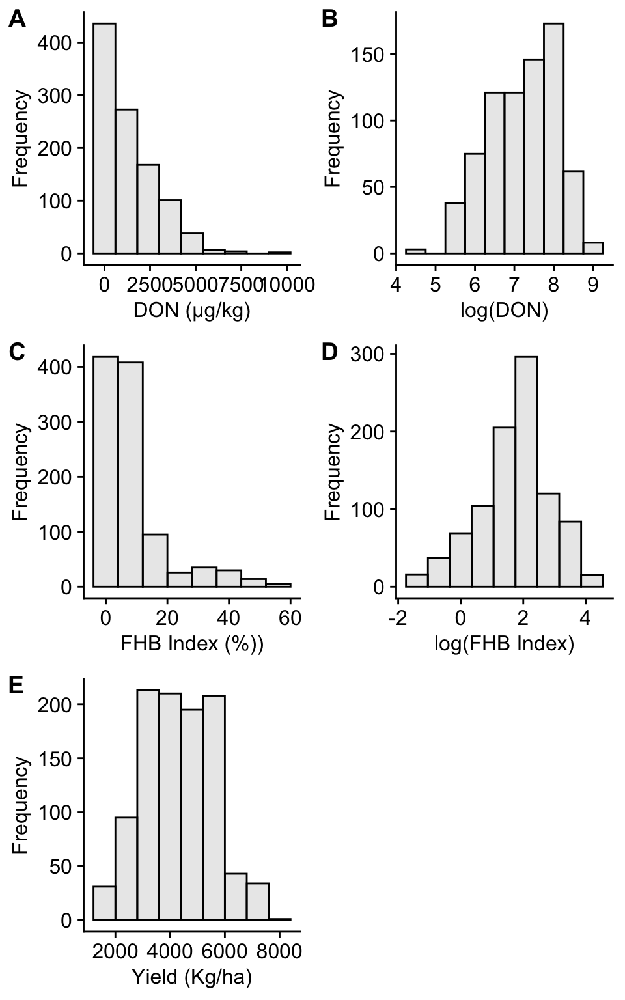
ggsave("figs/histograms.png", width = 8, height = 10, dpi = 600, bg = "white")Boxplots
Severity
library(plyr)
dat_sev$fungicide <- revalue(dat_sev$fungicide, c("aacheck" = "CHECK"))
dat_sev$fungicide <- revalue(dat_sev$fungicide, c("Carbendazim" = "CARB"))
dat_sev$fungicide <- revalue(dat_sev$fungicide, c("Metconazol" = "METC"))
dat_sev$fungicide <- revalue(dat_sev$fungicide, c("Piraclostrobina + metconazole" = "PYRA+METC"))
dat_sev$fungicide <- revalue(dat_sev$fungicide, c("Tebuconazole + trifloxistrobina" = "TEBU+TFLX"))
dat_sev$fungicide <- revalue(dat_sev$fungicide, c("Trifloxistrobina + protioconazole" = "TFLX+PROT"))
dat_sev$fungicide <- revalue(dat_sev$fungicide, c("Trifloxistrobina + protioconazole + bixafem" = "TFLX+PROT+BIXF"))
detach("package:plyr", unload = TRUE)
dat_sev <- dat_sev
dat_sev$fungicide <- factor(dat_sev$fungicide, levels = c("CHECK", "TEBU+TFLX", "CARB", "TFLX+PROT+BIXF","TFLX+PROT", "PYRA+METC", "METC" ))
box_state_sev = dat_sev %>%
filter(fungicide == "CHECK") %>%
ggplot(aes(factor(state), mean_sev)) +
geom_jitter(width = 0.15, size = 2, color = "gray85", alpha = 1) +
geom_boxplot(size = 1, outlier.shape = NA, fill = NA, color = "#E05313", width = 0.5) +
theme_minimal_hgrid(font_size = 10)+
labs(x = "State", y = "") +
scale_y_continuous(breaks = c(0,20,40,60,80,100), limits = c(0,100))+
theme(axis.title.x = element_blank(),
axis.text.x = element_blank(),
axis.title.y = element_text(size=12, face = "bold"),
panel.border = element_rect(color = "gray60", size=1),
axis.text.y = element_text(size=10)
# axis.title.y = element_text(size=14, face = "bold")
)
box_state_sev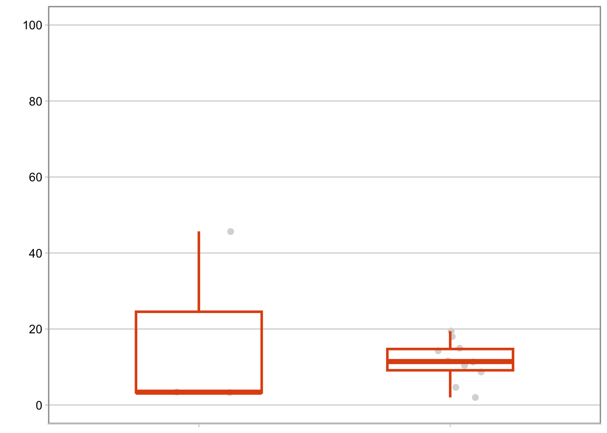
box_sev <- ggplot(dat_sev, aes(fungicide, mean_sev)) +
geom_jitter(width = 0.15, size = 2, color = "gray85", alpha = 1) +
geom_boxplot(size = 1, outlier.shape = NA, fill = NA, color = "#E05313", width = 0.5) +
theme_minimal_hgrid(font_size = 10)+
labs(x = "Fungicide", y = "FHB Severity (%)") +
scale_y_continuous(breaks = c(0,20,40,60,80,100), limits = c(0,100))+
theme(axis.title.x = element_blank(),
axis.text.x = element_blank(),
axis.title.y = element_text(size=12, face = "bold"),
panel.border = element_rect(color = "gray60", size=1),
axis.text.y = element_text(size=10)
# axis.title.y = element_text(size=14, face = "bold")
)
box_sev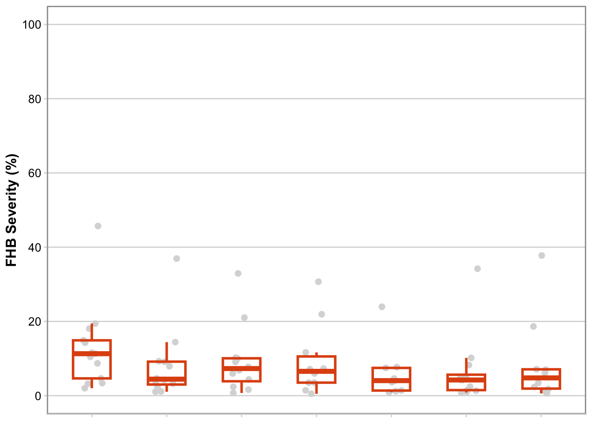
sev_year <- dat_sev %>%
filter(fungicide == "CHECK") %>%
ggplot(aes(factor(year_trial), mean_sev)) +
geom_jitter(width = 0.15, size = 2, color = "gray85", alpha = 1) +
geom_boxplot(size = 1, outlier.shape = NA, fill = NA, color = "#E05313", width = 0.5) +
theme_minimal_hgrid(font_size = 10)+
labs(x = "Year", y = "FHB severity (%) in the CHECK") +
scale_y_continuous(breaks = c(0,20,40,60,80,100), limits = c(0,100))+
theme(axis.title.x = element_blank(),
axis.text.x = element_blank(),
axis.title.y = element_text(size=12, face = "bold"),
panel.border = element_rect(color = "gray60", size=1),
axis.text.y = element_text(size=10)
# axis.title.y = element_text(size=14, face = "bold")
)
sev_year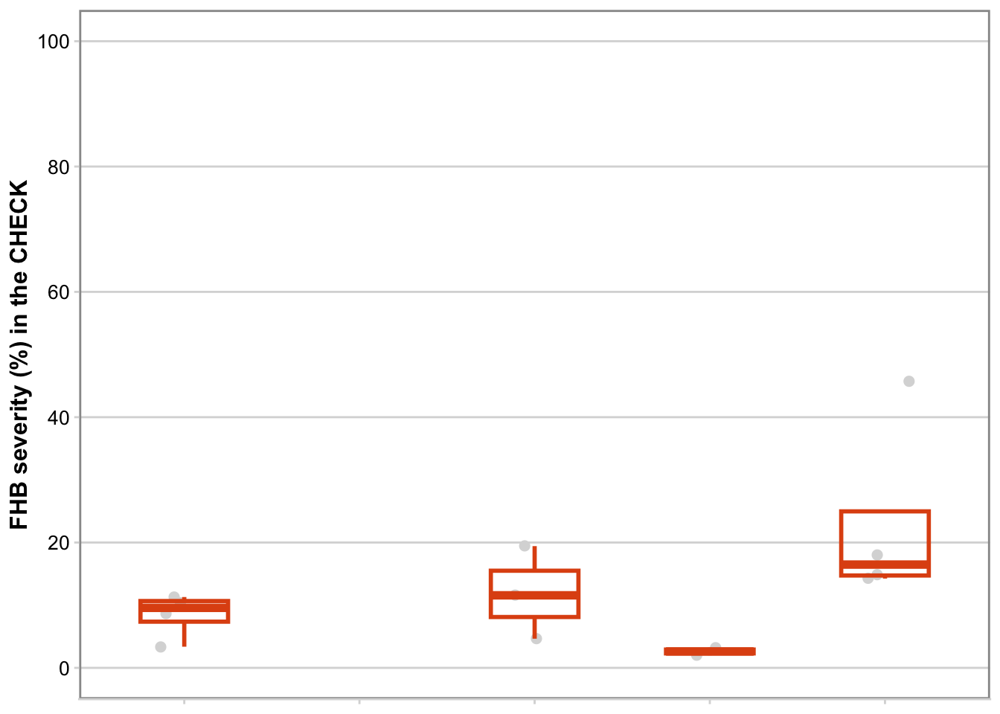
sev_sum <- dat_sev %>%
filter(fungicide == "CHECK") %>%
filter(mean_sev<101) %>%
filter(state == "PR")
summary(sev_sum$mean_sev) Min. 1st Qu. Median Mean 3rd Qu. Max.
3.225 3.300 3.375 17.433 24.538 45.700 DON
library(plyr)
dat_DON$fungicide <- revalue(dat_DON$fungicide, c("aacheck" = "CHECK"))
dat_DON$fungicide <- revalue(dat_DON$fungicide, c("Carbendazim" = "CARB"))
dat_DON$fungicide <- revalue(dat_DON$fungicide, c("Metconazol" = "METC"))
dat_DON$fungicide <- revalue(dat_DON$fungicide, c("Piraclostrobina + metconazole" = "PYRA+METC"))
dat_DON$fungicide <- revalue(dat_DON$fungicide, c("Tebuconazole + trifloxistrobina" = "TEBU+TFLX"))
dat_DON$fungicide <- revalue(dat_DON$fungicide, c("Trifloxistrobina + protioconazole" = "TFLX+PROT"))
dat_DON$fungicide <- revalue(dat_DON$fungicide, c("Trifloxistrobina + protioconazole + bixafem" = "TFLX+PROT+BIXF"))
detach("package:plyr", unload = TRUE)
dat_DON <- dat_DON
dat_DON$fungicide <- factor(dat_DON$fungicide, levels = c("CHECK", "TEBU+TFLX", "CARB", "TFLX+PROT+BIXF","TFLX+PROT", "PYRA+METC", "METC" ))
box_state_DON = dat_DON %>%
filter(fungicide == "CHECK") %>%
ggplot(aes(factor(state), mean_don)) +
geom_jitter(width = 0.15, size = 2, color = "gray85", alpha = 1) +
geom_boxplot(size = 1, outlier.shape = NA, fill = NA, color = "#7E0021", width = 0.5) +
theme_minimal_hgrid(font_size = 10)+
labs(x = "State", y = "") +
scale_y_continuous(breaks = c(0,2000,4000,6000, 8000), limits = c(0, 8000))+
theme(axis.title.x = element_blank(),
axis.text.x = element_blank(),
axis.title.y = element_blank(),
panel.border = element_rect(color = "gray60", size=1)
# axis.text.y = element_text(size=12),
# axis.title.y = element_text(size=14, face = "bold")
)
box_state_DON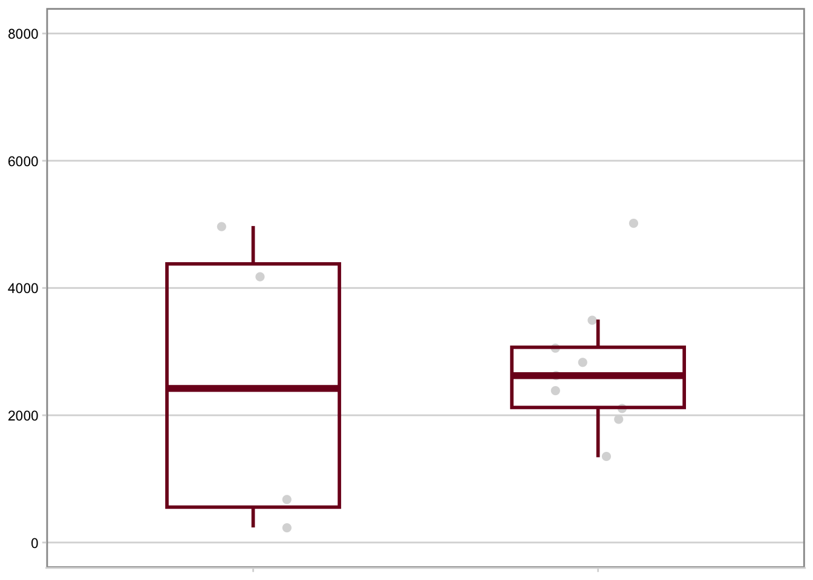
box_DON <- ggplot(dat_DON, aes(fungicide, mean_don)) +
geom_jitter(width = 0.15, size = 2, color = "gray85", alpha = 1) +
geom_boxplot(size = 1, outlier.shape = NA, fill = NA, color = "#7E0021", width = 0.5) +
theme_minimal_hgrid(font_size = 10)+
labs(x = "Fungicide", y = "DON (µg/kg)") +
scale_y_continuous(breaks = c(0,2000,4000,6000, 8000), limits = c(0, 8000))+
theme(axis.title.x = element_blank(),
axis.text.x = element_blank(),
axis.title.y = element_text(size=12, face = "bold"),
panel.border = element_rect(color = "gray60", size=1)
# axis.text.y = element_text(size=12),
# axis.title.y = element_text(size=14, face = "bold")
)
box_DON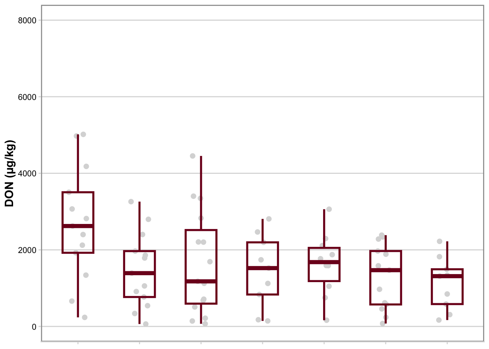
dat_DON1 <- dat5
DON_year <- dat_DON1 %>%
filter(fungicide == "aacheck") %>%
ggplot(aes(factor(year_trial), mean_don)) +
geom_jitter(width = 0.15, size = 2, color = "gray85", alpha = 1) +
geom_boxplot(size = 1, outlier.shape = NA, fill = NA, color = "#7E0021", width = 0.5) +
theme_minimal_hgrid(font_size = 10)+
labs(x = "Year", y = "DON (µg/kg) in the CHECK") +
scale_y_continuous(breaks = c(0,2000,4000,6000, 8000), limits = c(0, 8000))+
theme(axis.title.x = element_blank(),
axis.text.x = element_blank(),
panel.border = element_rect(color = "gray60", size=1),
axis.text.y = element_text(size=10),
axis.title.y = element_text(size=12, face = "bold")
)
DON_year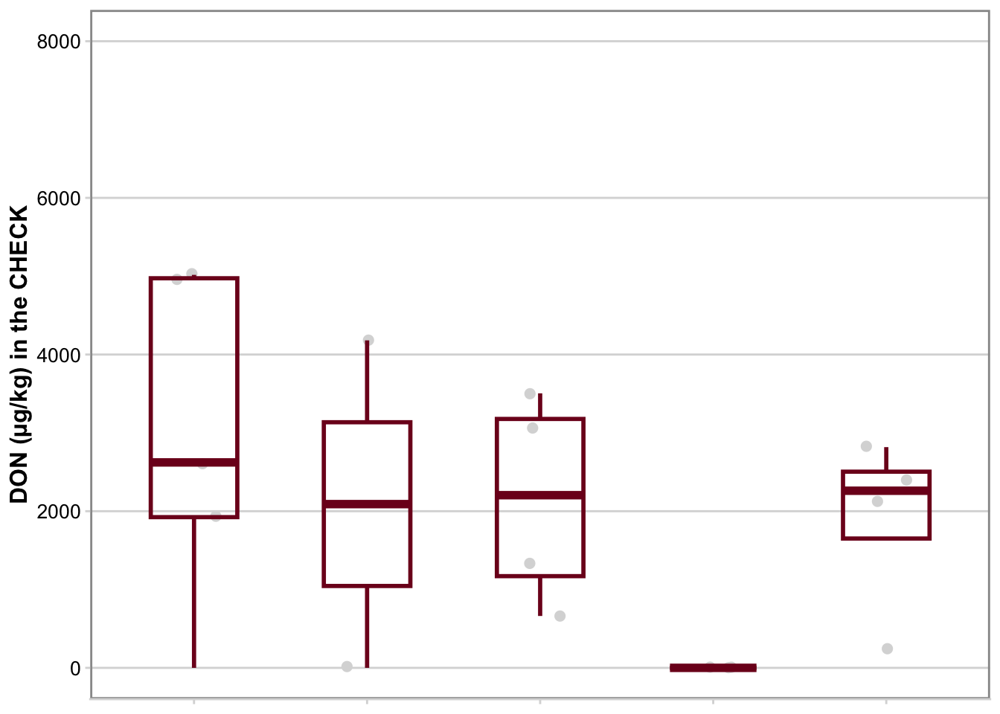
don_sum <- dat_DON %>%
filter(fungicide == "aacheck") %>%
filter(state == "PR")
summary(don_sum$mean_don) Min. 1st Qu. Median Mean 3rd Qu. Max.
Yield
library(plyr)
dat_yld$fungicide <- revalue(dat_yld$fungicide, c("aacheck" = "CHECK"))
dat_yld$fungicide <- revalue(dat_yld$fungicide, c("Carbendazim" = "CARB"))
dat_yld$fungicide <- revalue(dat_yld$fungicide, c("Metconazol" = "METC"))
dat_yld$fungicide <- revalue(dat_yld$fungicide, c("Piraclostrobina + metconazole" = "PYRA+METC"))
dat_yld$fungicide <- revalue(dat_yld$fungicide, c("Tebuconazole + trifloxistrobina" = "TEBU+TFLX"))
dat_yld$fungicide <- revalue(dat_yld$fungicide, c("Trifloxistrobina + protioconazole" = "TFLX+PROT"))
dat_yld$fungicide <- revalue(dat_yld$fungicide, c("Trifloxistrobina + protioconazole + bixafem" = "TFLX+PROT+BIXF"))
detach("package:plyr", unload = TRUE)
dat_yld <- dat_yld
dat_yld$fungicide <- factor(dat_yld$fungicide, levels = c("CHECK", "TEBU+TFLX", "CARB", "TFLX+PROT+BIXF","TFLX+PROT", "PYRA+METC", "METC" ))
box_state_yld = dat_yld %>%
filter(fungicide == "CHECK") %>%
ggplot(aes(factor(state), mean_yld)) +
geom_jitter(width = 0.15, size = 2, color = "gray85", alpha = 1) +
geom_boxplot(size = 1, outlier.shape = NA, fill = NA, color = "#4D1C06", width = 0.5) +
theme_minimal_hgrid(font_size = 10)+
labs(x = "State", y = "") +
scale_y_continuous(breaks = c(0,2000,4000,6000, 8000), limits = c(0, 8000))+
theme(axis.text.x = element_text(angle = 45, hjust = 1, size=10),
axis.title.x = element_text(size=12, face = "bold"),
axis.title.y = element_blank(),
panel.border = element_rect(color = "gray60", size=1)
# axis.text.y = element_text(size=12),
# axis.title = element_text(size=14, face = "bold")
)
box_state_yld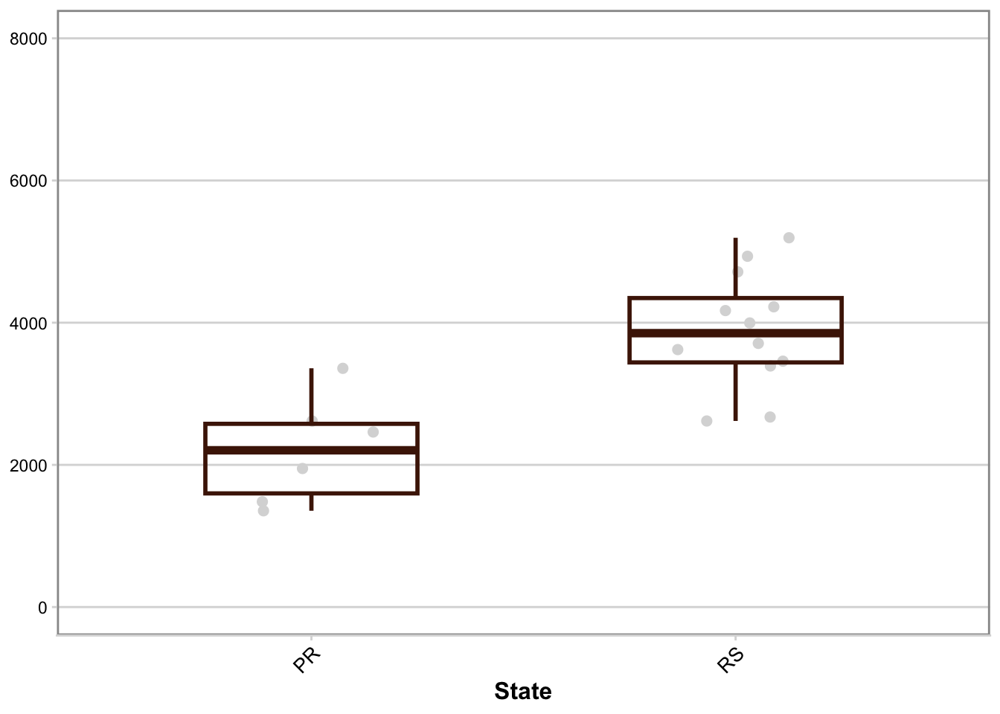
box_yld <- ggplot(dat_yld, aes(fungicide, mean_yld)) +
geom_jitter(width = 0.15, size = 2, color = "gray85", alpha = 1) +
geom_boxplot(size = 1, outlier.shape = NA, fill = NA, color = "#4D1C06", width = 0.5) +
theme_minimal_hgrid(font_size = 10)+
labs(x = "Fungicide", y = "Yield (kg/ha)") +
scale_y_continuous(breaks = c(0,2000,4000,6000, 8000), limits = c(0, 8000))+
theme(axis.text.x = element_text(angle = 45, hjust = 1, size=10),
axis.title.x = element_text(size=12, face = "bold"),
axis.title.y = element_text(size=12, face = "bold"),
panel.border = element_rect(color = "gray60", size=1)
# axis.text.y = element_text(size=12),
# axis.title = element_text(size=14, face = "bold")
)
box_yld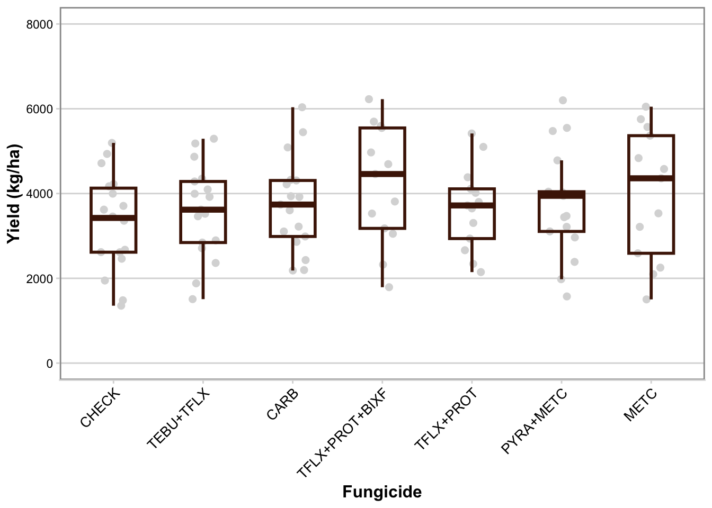
yld_year <- dat_yld %>%
filter(fungicide == "CHECK") %>%
ggplot(aes(factor(year_trial), mean_yld)) +
geom_jitter(width = 0.15, size = 2, color = "gray85", alpha = 1) +
geom_boxplot(size = 1, outlier.shape = NA, fill = NA, color = "#4D1C06", width = 0.5) +
theme_minimal_hgrid(font_size = 10)+
labs(x = "Crop Season", y = "Yield (kg/ha) in the CHECK") +
scale_y_continuous(breaks = c(0,2000,4000,6000, 8000), limits = c(0, 8000))+
theme(axis.text.x = element_text(angle = 45, hjust = 1, size=10),
axis.title.x = element_text(size=12, face = "bold"),
axis.title.y = element_text(size=12, face = "bold"),
panel.border = element_rect(color = "gray60", size=1),
axis.text.y = element_text(size=10))
yld_year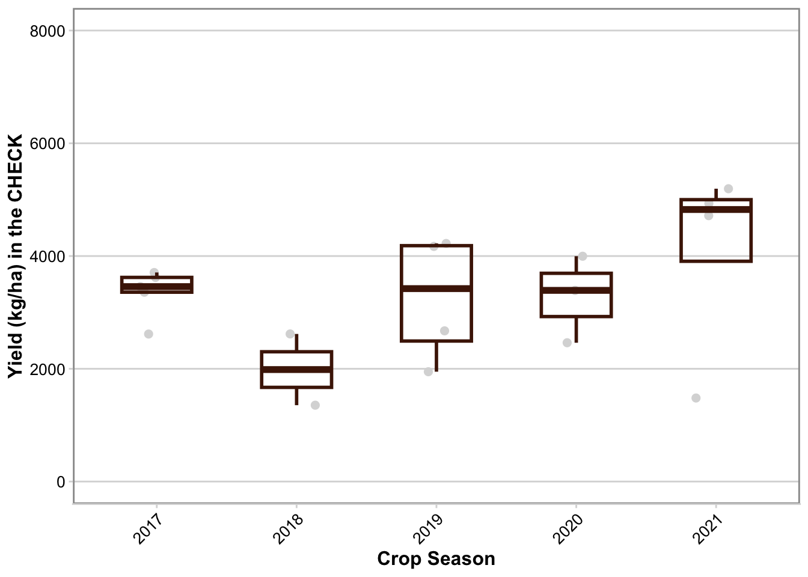
yld_sum <- dat_yld %>%
filter(fungicide == "aacheck") %>%
filter(year_trial == 2018)
summary(yld_sum$mean_yld) Min. 1st Qu. Median Mean 3rd Qu. Max.
Combo_Box
library(patchwork)
Attaching package: 'patchwork'The following object is masked from 'package:cowplot':
align_plotssev_year + box_state_sev + box_sev +
DON_year + box_state_DON + box_DON +
yld_year + box_state_yld + box_yld +
plot_layout(heights = c(1, 1,1),
widths = c(.7,.3,1))+
plot_annotation(tag_levels = 'A') &
theme(panel.border = element_blank())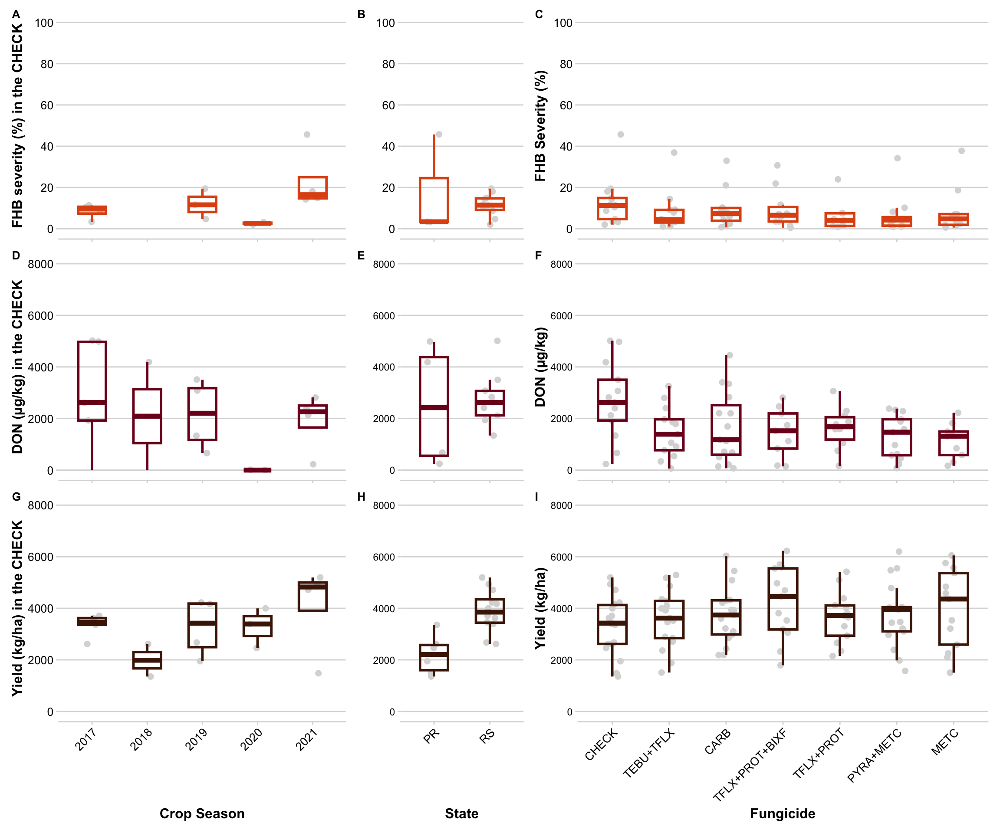
ggsave("figs/boxplots.png", width = 12, height = 10, dpi = 600, bg = "white")Severity x Yield
library(cowplot)
library(ggrepel)Warning: package 'ggrepel' was built under R version 4.1.2library(tidyverse)
library(ggthemes)
plot1 = full_join(efficacy_sev, yield_res, by = "fungicide")
plot1$fungicide <- factor(plot1$fungicide, levels = c("METC", "PYRA+METC", "TFLX+PROT", "TFLX+PROT+BIXF", "CARB", "TEBU+TFLX"))
plot1 = plot1 %>%
ggplot(aes(efficacy, yld)) +
geom_errorbar(aes(ymin = yld_inf, ymax = yld_sup, color = fungicide), alpha = 0.8, width=0, size= 0.8)+
geom_errorbarh(aes(xmin = efficacy_lw, xmax = efficacy_up, color = fungicide), alpha = 0.8, height= 0, size= 0.8)+
geom_point(aes(efficacy, yld, color = fungicide), size = 3)+
#scale_y_continuous(breaks=c(400,600,800,1000,1200), limits=c(400,1200))+
scale_x_continuous(breaks=c(20,40,60,80), limits=c(20,80))+
theme_minimal_grid()+
scale_color_calc()+
labs(y = "Yield response (kg/ha)", x = "FHB severity reduction (%)", color = "Fungicide")+
theme(axis.text=element_text(size=12),
axis.title=element_text(size=14, face = "bold"),
legend.position = "right",
legend.title.align = 0.5,
legend.title = element_text(size=12, face = "bold"))Warning: Using `size` aesthetic for lines was deprecated in ggplot2 3.4.0.
ℹ Please use `linewidth` instead.ggsave("figs/sev_yld.png", width = 8, height = 5, dpi = 600, bg = "white")DON x Yield
library(cowplot)
library(ggrepel)
library(tidyverse)
library(ggthemes)
plot2 = full_join(efficacy_don, yield_res, by = "fungicide")
plot2$fungicide <- factor(plot2$fungicide, levels = c("METC", "PYRA+METC", "TFLX+PROT", "TFLX+PROT+BIXF", "CARB", "TEBU+TFLX"))
plot2 = plot2 %>%
ggplot(aes(efficacy, yld)) +
geom_errorbar(aes(ymin = yld_inf, ymax = yld_sup, color = fungicide), alpha = 0.8, width=0, size= 0.8)+
geom_errorbarh(aes(xmin = efficacy_lw, xmax = efficacy_up, color = fungicide), alpha = 0.8, height= 0, size= 0.8)+
geom_point(aes(efficacy, yld, color = fungicide), size = 3)+
#scale_y_continuous(breaks=c(400,600,800,1000,1200), limits=c(400,1200))+
scale_x_continuous(breaks=c(20,40,60,80), limits=c(20,80))+
theme_minimal_grid()+
scale_color_calc()+
labs(y = "Yield response (kg/ha)", x = "DON reduction (%)", color = "Fungicide")+
theme(axis.text=element_text(size=12),
axis.title=element_text(size=14, face = "bold"),
legend.position = "right",
legend.title.align = 0.5,
legend.title = element_text(size=12, face = "bold"))
ggsave("figs/DON_yld.png", width = 8, height = 5, dpi = 600, bg = "white")library(patchwork)
plot1 + plot2 + plot_annotation(tag_levels = 'A') + plot_layout(guides = "collect") & theme(legend.position = "right")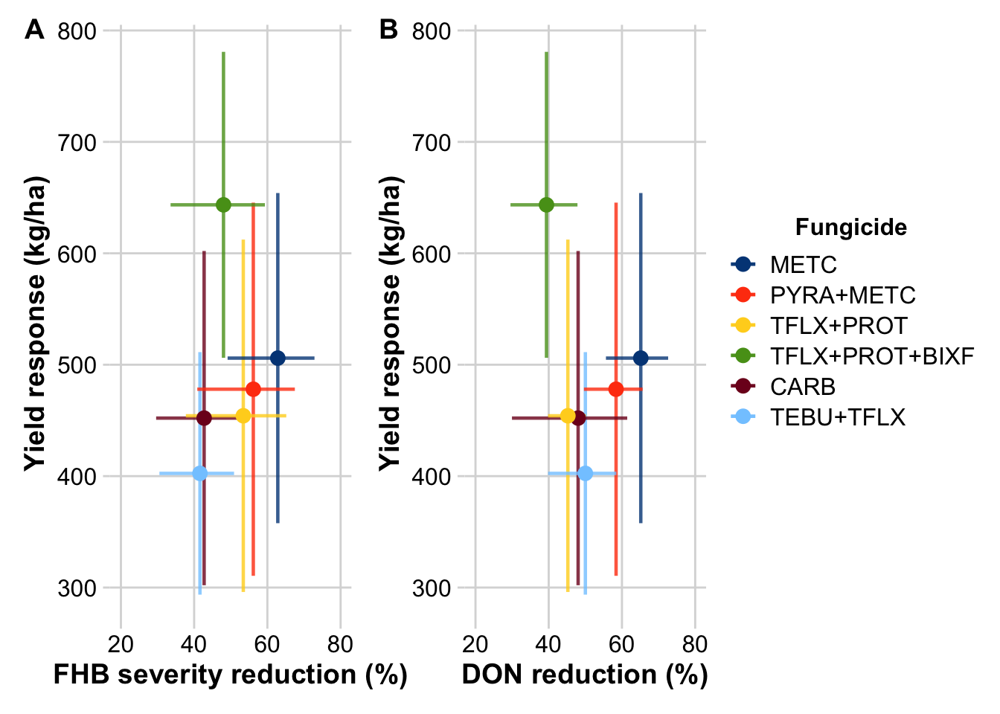
ggsave("figs/combo.png", height=7, width=13, dpi = 600, bg = "white")